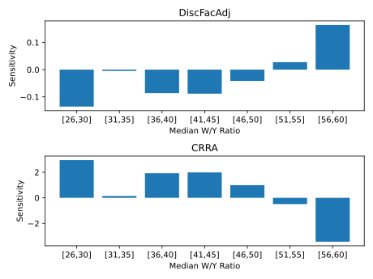
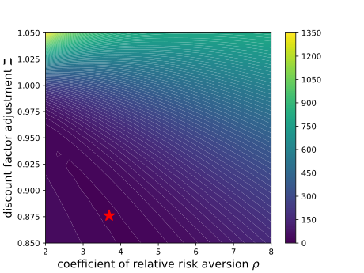

with a certain amount
of ‘capital’
with a certain amount
of ‘capital’  , which is immediately rewarded by a return factor
, which is immediately rewarded by a return factor  with the proceeds
deposited in a bank account balance:
with the proceeds
deposited in a bank account balance:
SolvingMicroDSOPs, April 2, 2024
Note: The GitHub repo SolvingMicroDSOPs repo associated with this document contains python code that produces all results, from scratch, except for the last section on indirect inference. The numerical results have been confirmed by showing that the answers that the raw python produces correspond to the answers produced by tools available in the Econ-ARK toolkit, more specifically those in the HARK which has full documentation. The MSM results at the end have have been superseded by tools in the EstimatingMicroDSOPs repo.
Abstract Dynamic Stochastic Optimization, Method of Simulated
Moments, Structural Estimation, Indirect Inference
E21, F41
_____________________________________________________________________________________
These notes describe tools for solving microeconomic dynamic stochastic optimization problems,
and show how to use those tools for efficiently estimating a standard life cycle consumption/saving
model using microeconomic data. No attempt is made at a systematic overview of the many possible
technical choices; instead, I present a specific set of methods that have proven useful in my own work
(and explain why other popular methods, such as value function iteration, are a bad idea). Paired
with these notes is Mathematica, Matlab, and Python software that solves the problems described in
the text.
| PDF: | https://github.com/llorracc/SolvingMicroDSOPs/blob/master/SolvingMicroDSOPs.pdf |
| Slides: | https://github.com/\owner/SolvingMicroDSOPs/blob/master/SolvingMicroDSOPs-Slides.pdf |
| Web: | https://\owner.github.io/SolvingMicroDSOPs |
| Code: | https://github.com/\owner/SolvingMicroDSOPs/tree/master/Code |
| Archive: | https://github.com/\owner/SolvingMicroDSOPs |
| (Contains LaTeX code for this document and software producing figures and results) |
1Carroll: Department of Economics, Johns Hopkins University, Baltimore, MD, ccarroll@jhu.edu The notes were originally written for my Advanced Topics in Macroeconomic Theory class at Johns Hopkins University; instructors elsewhere are welcome to use them for teaching purposes. Relative to earlier drafts, this version incorporates several improvements related to new results in the paper “Theoretical Foundations of Buffer Stock Saving” (especially tools for approximating the consumption and value functions). Like the last major draft, it also builds on material in “The Method of Endogenous Gridpoints for Solving Dynamic Stochastic Optimization Problems” published in Economics Letters, available at http://www.econ2.jhu.edu/people/ccarroll/EndogenousArchive.zip, and by including sample code for a method of simulated moments estimation of the life cycle model a la Gourinchas and Parker (2002) and Cagetti (2003). Background derivations, notation, and related subjects are treated in my class notes for first year macro, available at http://www.econ2.jhu.edu/people/ccarroll/public/lecturenotes/consumption. I am grateful to several generations of graduate students in helping me to refine these notes, to Marc Chan for help in updating the text and software to be consistent with Carroll (2006), to Kiichi Tokuoka for drafting the section on structural estimation, to Damiano Sandri for exceptionally insightful help in revising and updating the method of simulated moments estimation section, and to Weifeng Wu and Metin Uyanik for revising to be consistent with the ‘method of moderation’ and other improvements. All errors are my own. This document can be cited as Carroll (2023a) in the references.
These lecture notes provide a gentle introduction to a particular set of solution tools for the canonical consumption-saving/portfolio allocation problem. Specifically, the notes describe and solve optimization problems for a consumer facing uninsurable idiosyncratic risk to nonfinancial income (e.g., labor or transfer income), first without and then with optimal portfolio choice,1 with detailed intuitive discussion of the various mathematical and computational techniques that, together, speed the solution by many orders of magnitude compared to “brute force” methods. The problem is solved with and without liquidity constraints, and the infinite horizon solution is obtained as the limit of the finite horizon solution. After the basic consumption/saving problem with a deterministic interest rate is described and solved, an extension with portfolio choice between a riskless and a risky asset is also solved. Finally, a simple example shows how to use these methods (via the statistical ‘method of simulated moments’ (‘MSM’) to estimate structural parameters like the coefficient of relative risk aversion (a la Gourinchas and Parker (2002) and Cagetti (2003)).
The usual analysis of dynamic stochastic programming problems packs a great many events (intertemporal choice, stochastic shocks, intertemporal returns, income growth, the taking of expectations, and more) into a single step in which the agent makes an optimal choice taking account of all of these elements. For the detailed analysis here, we will be careful to disarticulate everything that happens in the problem explicitly into separate steps so that each element can be scrutinized and understood in isolation.
We are interested in the behavior a consumer who begins period with a certain amount
of ‘capital’ , which is immediately rewarded by a return factor with the proceeds
deposited in a bank account balance:
| (1) |
Simultaneously with the realization of the capital return, the consumer also receives
noncapital income , which is determined by multiplying the consumer’s ‘permanent
income’  by a transitory shock
by a transitory shock  :
:
| (2) |
whose whose expectation is 1 (that is, before realization of the transitory shock, the
consumer’s expectation is that actual income will on average be equal to permanent income
 ).
).
The combination of bank balances  and income
and income  define’s the consumer’s ‘market
resources’ (sometimes called ‘cash-on-hand,’ following Deaton (1992)):
define’s the consumer’s ‘market
resources’ (sometimes called ‘cash-on-hand,’ following Deaton (1992)):
| (3) |
available to be spent on consumption  for a consumer subject to a liquidity constraint that
requires
for a consumer subject to a liquidity constraint that
requires  .
.
The consumer’s goal is to maximize discounted utility from consumption over the rest of a
lifetime ending at date  :
:
| (4) |
Income evolves according to:
| (5) |
Equation (5) indicates that we are allowing for a predictable average profile of income
growth over the lifetime  (to capture typical career wage paths, pension arrangements,
etc).2
Finally, the utility function is of the Constant Relative Risk Aversion (CRRA), form,
(to capture typical career wage paths, pension arrangements,
etc).2
Finally, the utility function is of the Constant Relative Risk Aversion (CRRA), form,
 .
.
It is well known that this problem can be rewritten in recursive (Bellman) form
| (6) |
subject to the Dynamic Budget Constraint (DBC) implicitly defined by equations (1)-(3) and to the transition equation that defines next period’s initial capital as this period’s end-of-period assets:
| (7) |
The single most powerful method for speeding the solution of such models is to redefine the
problem in a way that reduces the number of state variables (if at all possible). Here, the
obvious idea is to see whether the problem can be rewritten in terms of the ratio of various
variables to permanent noncapital (‘labor’) income  (henceforth for brevity, ‘permanent
income.’)
(henceforth for brevity, ‘permanent
income.’)
In the last period of life, there is no future,  , so the optimal plan is to consume
everything:
, so the optimal plan is to consume
everything:
| (8) |
Now define nonbold variables as the bold variable divided by the level of permanent
income in the same period, so that, for example,  ; and define
; and define
 .3
For our CRRA utility function,
.3
For our CRRA utility function,  , so (8) can be rewritten as
, so (8) can be rewritten as
| (9) |
Now define a new optimization problem:
| (10) |
where the last equation is the normalized version of the transition equation for
 .4
Then it is easy to see that for
.4
Then it is easy to see that for  ,
,
 |
and so on back to all earlier periods. Hence, if we solve the problem (10) which (when
optimal consumption is being chosen) has only a single state variable  , we can
obtain the levels of the value function, consumption, and all other variables from the
corresponding permanent-income-normalized solution objects by multiplying each by
, we can
obtain the levels of the value function, consumption, and all other variables from the
corresponding permanent-income-normalized solution objects by multiplying each by  ,
e.g.
,
e.g.  (or, for the value function,
(or, for the value function,  . We have
thus reduced the problem from two continuous state variables to one (and thereby enormously
simplified its solution).
. We have
thus reduced the problem from two continuous state variables to one (and thereby enormously
simplified its solution).
For some problems it will not be obvious that there is an appropriate ‘normalizing’ variable, but many problems can be normalized if sufficient thought is given. For example, Valencia (2006) shows how a bank’s optimization problem can be normalized by the level of the bank’s productivity.
The preceding analysis made some implicit assumptions about what was known when; difficulty intuiting or inferring those implicit assumptions is a common stumbling block for students trying to this material.
Generically, we want to think of the Bellman problem itself as having three steps:
Arrival: Incoming state variables (e.g.,  ) are known, but any shocks associated
with the period have not been realized and decision(s) have not yet been made
) are known, but any shocks associated
with the period have not been realized and decision(s) have not yet been made
Decision: All exogenous variables (like income shocks, rate of return shocks,
predictable income growth  have been realized (so that, e.g.,
have been realized (so that, e.g.,  ’s value is
known) and the agent solves the optimization problem
’s value is
known) and the agent solves the optimization problem
Continuation: After all decisions have been made, it is possible to calculate the
consequences of the decision, taking as given the ‘outgoing’ state variables (e.g.,
 ) – sometimes called ‘post-state’ variables.
) – sometimes called ‘post-state’ variables.
The (implicit) default assumption is often to think of the step of the problem
where the agent is solving a decision problem as defining the unique moment at
which the problem is defined. This is what implicitly was done above, when (for
example) in (10) we related current value  to the expectation of future value
to the expectation of future value
 .
.
When we want to refer to a specific step within period  we will do so by preceding it by
an indicator character:
we will do so by preceding it by
an indicator character:

This notation allows us to capture the fact that the value of the consumer’s circumstances can be computed at any of the three steps (and is a function of a different state variable at each step).
Note that there is no need to use these subscripts for the model’s variables; while a variable
like  takes on its value in the transition from the Decision to the Continuation
step,
takes on its value in the transition from the Decision to the Continuation
step,  will have only one unique value over the course of the period and therefore a notation
like
will have only one unique value over the course of the period and therefore a notation
like  would be useless because the variable does not have a value until the continuation
step is reached. Each variable in our problem has a unique value defined at some point during
the period, so there is no ambiguity in referring to them with normal notation like
would be useless because the variable does not have a value until the continuation
step is reached. Each variable in our problem has a unique value defined at some point during
the period, so there is no ambiguity in referring to them with normal notation like
 .
.
Using this new notation, the first order condition for (10) with respect to  is
is
| (11) |
and because the Envelope theorem tells us that
| (12) |
we can substitute the LHS of (12) for the RHS of (11) to get
| (13) |
and rolling forward one period,
| (14) |
and substituting the LHS in equation (11) finally gives us the Euler equation for consumption:
| (15) |
For future reference, it may be useful here to write the distinct value functions at each step (using the transition equations from (10)):
| (16) |
| (17) |
and
| (18) |
where the last line illustrates the notation for addressing the beginning step of the successor period.
Putting all this together, from the perspective of the beginning of period  we can
write the ‘arrival value’ function and its first derivative as
we can
write the ‘arrival value’ function and its first derivative as
| (19) |
because they return the expected  value and marginal value associated with arriving in
period
value and marginal value associated with arriving in
period  with any given amount of kapital. Finally, note for future use that since
with any given amount of kapital. Finally, note for future use that since
 and
and  , the first order condition (11) can now be rewritten
compactly as
, the first order condition (11) can now be rewritten
compactly as
| (20) |
For convenience assuming that so that the  terms disappear from the earlier
derivations, the problem in the second-to-last period of life can now be expressed
as
terms disappear from the earlier
derivations, the problem in the second-to-last period of life can now be expressed
as
 |
where  indicates that the expectation is taken as of the end of period
indicates that the expectation is taken as of the end of period  .
.
Using (1) the fact that  ; (2) the definition of
; (2) the definition of  ; (3) the definition of the
expectations operator, this becomes:
; (3) the definition of the
expectations operator, this becomes:
 |
where  is the cumulative distribution function for
is the cumulative distribution function for  .
.
The maximization implicitly defines a function  that yields optimal
consumption in period
that yields optimal
consumption in period  for any specific numerical level of resources like
for any specific numerical level of resources like  .
But because there is no general analytical solution to this problem, for any given
.
But because there is no general analytical solution to this problem, for any given  we
must use numerical computational tools to find the
we
must use numerical computational tools to find the  that maximizes the expression. This
is excruciatingly slow because for every potential
that maximizes the expression. This
is excruciatingly slow because for every potential  to be considered, a definite integral
over the interval
to be considered, a definite integral
over the interval  must be calculated numerically, and numerical integration is very
slow (especially over an unbounded domain!).
must be calculated numerically, and numerical integration is very
slow (especially over an unbounded domain!).
Our first speedup trick is therefore to construct a discrete approximation to the
lognormal distribution that can be used in place of numerical integration. That is, we
want to approximate the expectation over  of a function
of a function  by calculating its
value at set of
by calculating its
value at set of  points
points  , each of which has an associated probability weight
, each of which has an associated probability weight
 :
:
![-
∫ 𝜃
𝔼 [g(𝜃)] = (𝜗 )dℱ (𝜗 )
𝜃
∑n
≈ wig(𝜃i)
𝜃=1](SolvingMicroDSOPs89x.svg) |
(because adding  weighted values to each other is enormously faster than general-purpose
numerical integration).
weighted values to each other is enormously faster than general-purpose
numerical integration).
Such a procedure is called a ‘quadrature’ method of integration; Tanaka and Toda (2013)
survey a number of options, but for our purposes we choose the one which is easiest to
understand: An ‘equiprobable’ approximation (that is, one where each of the values of  has
an equal probability, equal to
has
an equal probability, equal to  ).
).
We calculate such an  -point approximation as follows.
-point approximation as follows.
Define a set of points from  to
to  on the
on the ![[0,1]](SolvingMicroDSOPs96x.svg) interval as the elements of the set
interval as the elements of the set
 .5
Call the inverse of the
.5
Call the inverse of the  distribution
distribution  , and define the points
, and define the points  . Then the
conditional mean of
. Then the
conditional mean of  in each of the intervals numbered 1 to
in each of the intervals numbered 1 to  is:
is:
| (21) |
and when the integral is evaluated numerically for each  the result is a set of values of
the result is a set of values of  that correspond to the mean value in each of the
that correspond to the mean value in each of the  intervals.
intervals.
The method is illustrated in Figure 1. The solid continuous curve represents the “true” CDF
 for a lognormal distribution such that
for a lognormal distribution such that ![𝔼 [𝜃 ] = 1](SolvingMicroDSOPs109x.svg) ,
,  . The short vertical line
segments represent the
. The short vertical line
segments represent the  equiprobable values of
equiprobable values of  which are used to approximate this
distribution.6
which are used to approximate this
distribution.6
# This is a snippet of code that constructs mass points # for the equiprobable representation of the problem
Because one of the purposes of these notes is to connect the math to the code that solves the math, we display here a brief snippet from the notebook that constructs these points:
Substituting into our definition of  ,
,
| (22) |
so we can rewrite the maximization problem that defines the middle stage of the period  as
as
| (23) |
# The code that corresponds to evaluation of the discretized max problem is
Given a particular value of  , a numerical maximization routine can now find the
, a numerical maximization routine can now find the  that maximizes (23) in a reasonable amount of time.
that maximizes (23) in a reasonable amount of time.
The heart of the program responsible for computing an estimated consumption function
begins in “Solving the Model by Value Function Maximization,” where a grid characterizing
the possible values of market resources ( ) is initialized (in the code, various
) is initialized (in the code, various  vectors
have names beginning mVec), and for each of the mVec values, the consumption
values
vectors
have names beginning mVec), and for each of the mVec values, the consumption
values  that solve the minimization problem equivalent to (23) are computed. We
arbitrarily pick the first five integers as our five mVec gridpoints. (That is, mVec_int=
that solve the minimization problem equivalent to (23) are computed. We
arbitrarily pick the first five integers as our five mVec gridpoints. (That is, mVec_int=
 .
.
Given a set of points on a function (in this case, the consumption function  ), we can
create a piecewise linear ‘interpolating function’ (a ‘spline’) which when applied to an input
), we can
create a piecewise linear ‘interpolating function’ (a ‘spline’) which when applied to an input
 will yield the value of
will yield the value of  that corresponds to a linear ‘connect-the-dots’ interpolation of
the value of
that corresponds to a linear ‘connect-the-dots’ interpolation of
the value of  from the points, creating a function that is an approximation of the function
whose points have been sampled.
from the points, creating a function that is an approximation of the function
whose points have been sampled.
This is accompished in “An Interpolated Consumption Function,” which defines an
approximation to the consumption function  . That is, when called with an
. That is, when called with an  that is equal to one of the points in mVec_int,
that is equal to one of the points in mVec_int,  returns the associated value of
returns the associated value of
 , and when called with a value of
, and when called with a value of  that is not exactly equal to one of the
mVec_int, returns the value of
that is not exactly equal to one of the
mVec_int, returns the value of  that reflects a linear interpolation between the
that reflects a linear interpolation between the
 points associated with the two mVec_int points immediately above and below
points associated with the two mVec_int points immediately above and below
 .
.
Figures 2 and 3 show plots of the constructed  and
and  . While the
. While the  function looks very smooth, the fact that the
function looks very smooth, the fact that the  function is a set of line
segments is very evident. This figure provides the beginning of the intuition for
why trying to approximate the value function directly is a bad idea (in this
context).7
function is a set of line
segments is very evident. This figure provides the beginning of the intuition for
why trying to approximate the value function directly is a bad idea (in this
context).7
Picewise linear ‘spline’ interpolation as described above works well for generating a good
approximation to the true optimal consumption function. However, there is a clear inefficiency
in the program: Since it uses equation (23), for every value of  the program must
calculate the utility consequences of various possible choices of
the program must
calculate the utility consequences of various possible choices of  as it searches for the
best choice.
as it searches for the
best choice.
For any given value of  , notice that there is a good chance that the program may end
up calculating the corresponding
, notice that there is a good chance that the program may end
up calculating the corresponding  many times while maximizing utility from different
many times while maximizing utility from different
 ’s. For example, it is possible that the program will calculate the value of ending the
period with
’s. For example, it is possible that the program will calculate the value of ending the
period with  dozens of times. It would be much more efficient if the program could
make the calculation of
dozens of times. It would be much more efficient if the program could
make the calculation of  once and then merely recall the value when it is needed
again.
once and then merely recall the value when it is needed
again.
Something like this can be achieved using the same interpolation technique used above to
construct a direct numerical approximation to the value function: Define a vector of possible
values for end-of-period assets at time  ,
,  (aVec in the code). Next, construct
(aVec in the code). Next, construct
 using equation (23); then construct an approximation
using equation (23); then construct an approximation  by
passing the lists aVec and vVec as arguments. These lists contain the points of the
by
passing the lists aVec and vVec as arguments. These lists contain the points of the  and
and
 vectors, respectively.
vectors, respectively.
As seen in the section “Interpolating Expectations,” we are now interpolating for the function that reveals the expected value of ending the period with a given amount of assets.8
Figure 4 compares the true value function to the approximation produced following the
interpolation procedure; the functions are of course identical at the gridpoints of  and
they appear reasonably close except in the region below
and
they appear reasonably close except in the region below  .
.
In all figs, replace gothic notation with notation corresponding to the notebook.
Nevertheless, the consumption rule obtained when the approximating  is used
instead of
is used
instead of  is surprisingly bad, as shown in figure 5. For example, when
is surprisingly bad, as shown in figure 5. For example, when  goes from 2 to 3,
goes from 2 to 3,  goes from about 1 to about 2, yet when
goes from about 1 to about 2, yet when  goes from 3 to
4,
goes from 3 to
4,  goes from about 2 to about 2.05. The function fails even to be strictly
concave, which is distressing because Carroll and Kimball (1996) prove that the correct
consumption function is strictly concave in a wide class of problems that includes this
problem.
goes from about 2 to about 2.05. The function fails even to be strictly
concave, which is distressing because Carroll and Kimball (1996) prove that the correct
consumption function is strictly concave in a wide class of problems that includes this
problem.
Loosely speaking, our difficulty reflects the fact that the consumption choice is governed by
the marginal value function, not by the level of the value function (which is the object that we
approximated). To understand this point, recall that a quadratic utility function exhibits risk
aversion because with a stochastic  ,
,
| (24) |
(where  is the ‘bliss point’ which is assumed always to exceed feasible
is the ‘bliss point’ which is assumed always to exceed feasible  ). However, unlike
the CRRA utility function, with quadratic utility the consumption/saving behavior of
consumers is unaffected by risk since behavior is determined by the first order condition,
which depends on marginal utility, and when utility is quadratic, marginal utility is unaffected
by risk:
). However, unlike
the CRRA utility function, with quadratic utility the consumption/saving behavior of
consumers is unaffected by risk since behavior is determined by the first order condition,
which depends on marginal utility, and when utility is quadratic, marginal utility is unaffected
by risk:
| (25) |
Intuitively, if one’s goal is to accurately capture choices that are governed by marginal value, numerical techniques that approximate the marginal value function will yield a more accurate approximation to optimal behavior than techniques that approximate the level of the value function.
The first order condition of the maximization problem in period  is:
is:
| (26) |
In the notebook, the “Value Function versus the First Order Condition” section completes the task of finding the values of consumption which satisfy the first order condition in (26) using the brentq function from the scipy package.
The downward-sloping curve in Figure 6 shows the value of  for our baseline
parameter values for
for our baseline
parameter values for  (the horizontal axis). The solid upward-sloping curve
shows the value of the RHS of (26) as a function of
(the horizontal axis). The solid upward-sloping curve
shows the value of the RHS of (26) as a function of  under the assumption that
under the assumption that
 . Constructing this figure is time-consuming, because for every value of
. Constructing this figure is time-consuming, because for every value of  plotted we must calculate the RHS of (26). The value of
plotted we must calculate the RHS of (26). The value of  for which the RHS and LHS of
(26) are equal is the optimal level of consumption given that
for which the RHS and LHS of
(26) are equal is the optimal level of consumption given that  , so the intersection of
the downward-sloping and the upward-sloping curves gives the (approximated) optimal value
of
, so the intersection of
the downward-sloping and the upward-sloping curves gives the (approximated) optimal value
of  . As we can see, the two curves intersect just below
. As we can see, the two curves intersect just below  . Similarly, the
upward-sloping dashed curve shows the expected value of the RHS of (26) under the
assumption that
. Similarly, the
upward-sloping dashed curve shows the expected value of the RHS of (26) under the
assumption that  , and the intersection of this curve with
, and the intersection of this curve with  yields the
optimal level of consumption if
yields the
optimal level of consumption if  . These two curves intersect slightly below
. These two curves intersect slightly below
 . Thus, increasing
. Thus, increasing  from 3 to 4 increases optimal consumption by about
0.5.
from 3 to 4 increases optimal consumption by about
0.5.
Now consider the derivative of our function  . Because we have constructed
. Because we have constructed
 as a linear interpolation, the slope of
as a linear interpolation, the slope of  between any two adjacent points
between any two adjacent points
 is constant. The level of the slope immediately below any particular
gridpoint is different, of course, from the slope above that gridpoint, a fact which implies that
the derivative of
is constant. The level of the slope immediately below any particular
gridpoint is different, of course, from the slope above that gridpoint, a fact which implies that
the derivative of  follows a step function.
follows a step function.
The solid-line step function in Figure 6 depicts the actual value of  . When
we attempt to find optimal values of
. When
we attempt to find optimal values of  given
given  using
using  , the numerical
optimization routine will return the
, the numerical
optimization routine will return the  for which
for which  . Thus,
for
. Thus,
for  the program will return the value of
the program will return the value of  for which the downward-sloping
for which the downward-sloping
 curve intersects with the
curve intersects with the  ; as the diagram shows, this value is
exactly equal to 2. Similarly, if we ask the routine to find the optimal
; as the diagram shows, this value is
exactly equal to 2. Similarly, if we ask the routine to find the optimal  for
for  , it
finds the point of intersection of
, it
finds the point of intersection of  with
with  ; and as the diagram shows,
this intersection is only slightly above 2. Hence, this figure illustrates why the numerical
consumption function plotted earlier returned values very close to
; and as the diagram shows,
this intersection is only slightly above 2. Hence, this figure illustrates why the numerical
consumption function plotted earlier returned values very close to  for both
for both
 and
and  .
.
We would obviously obtain much better estimates of the point of intersection between
 and
and  if our estimate of
if our estimate of  were not a step function. In
fact, we already know how to construct linear interpolations to functions, so the obvious next
step is to construct a linear interpolating approximation to the expected marginal value of
end-of-period assets function
were not a step function. In
fact, we already know how to construct linear interpolations to functions, so the obvious next
step is to construct a linear interpolating approximation to the expected marginal value of
end-of-period assets function  :
:
| (27) |
at the points in aVec yielding  (the vector of expected end-of-period-
(the vector of expected end-of-period- marginal
values of assets corresponding to aVec), and construct
marginal
values of assets corresponding to aVec), and construct  as the linear
interpolating function that fits this set of points.
as the linear
interpolating function that fits this set of points.
The results are shown in Figure 7. The linear interpolating approximation looks roughly as good (or bad) for the marginal value function as it was for the level of the value function. However, Figure 8 shows that the new consumption function (long dashes) is a considerably better approximation of the true consumption function (solid) than was the consumption function obtained by approximating the level of the value function (short dashes).
Even the new-and-improved consumption function diverges notably from the true solution,
especially at lower values of  . That is because the linear interpolation does an increasingly
poor job of capturing the nonlinearity of
. That is because the linear interpolation does an increasingly
poor job of capturing the nonlinearity of  at lower and lower levels of
at lower and lower levels of
 .
.
This is where we unveil our next trick. To understand the logic, start by considering the
case where  and there is no uncertainty (that is, we know for sure that
income next period will be
and there is no uncertainty (that is, we know for sure that
income next period will be  ). The final Euler equation is then:
). The final Euler equation is then:
| (28) |
In the case we are now considering with no uncertainty and no liquidity constraints, the
optimizing consumer does not care whether a unit of income is scheduled to be received in the
future period  or the current period
or the current period  ; there is perfect certainty that the income will
be received, so the consumer treats its PDV as equivalent to a unit of current wealth.
Total resources available at the point when the consumption decision is made is
therefore are comprised of two types: current market resources
; there is perfect certainty that the income will
be received, so the consumer treats its PDV as equivalent to a unit of current wealth.
Total resources available at the point when the consumption decision is made is
therefore are comprised of two types: current market resources  and ‘human
wealth’ (the PDV of future income) of
and ‘human
wealth’ (the PDV of future income) of  (because it is the value of human
wealth as of the end of the period, and there is only one more period of income of 1
left).
(because it is the value of human
wealth as of the end of the period, and there is only one more period of income of 1
left).
The optimal solution is to spend half of total lifetime resources in period  and the remainder in period
and the remainder in period  . Since total resources are known with certainty
to be
. Since total resources are known with certainty
to be  , and since
, and since  this implies
that
this implies
that
| (29) |
Of course, this is a highly nonlinear function. However, if we raise both sides of (29) to the
power  the result is a linear function:
the result is a linear function:
| (30) |
This is a specific example of a general phenomenon: A theoretical literature discussed
in Carroll and Kimball (1996) establishes that under perfect certainty, if the period-by-period
marginal utility function is of the form  , the marginal value function will be of the form
, the marginal value function will be of the form
 for some constants
for some constants  . This means that if we were solving the perfect
foresight problem numerically, we could always calculate a numerically exact (because linear)
interpolation.
. This means that if we were solving the perfect
foresight problem numerically, we could always calculate a numerically exact (because linear)
interpolation.
To put the key insight in intuitive terms, the problem we are facing springs in large part
from the fact that the marginal value function is highly nonlinear. But we have a compelling
solution to that problem, because the nonlinearity springs largely from the fact that we are
raising something to the power  . In effect, we can ‘unwind’ all of the nonlinearity owing
to that operation and the remaining nonlinearity will not be nearly so great. Specifically,
applying the foregoing insights to the end-of-period value function
. In effect, we can ‘unwind’ all of the nonlinearity owing
to that operation and the remaining nonlinearity will not be nearly so great. Specifically,
applying the foregoing insights to the end-of-period value function  , we can
define
, we can
define
| (31) |
which would be linear in the perfect foresight case. Thus, our procedure is to calculate the
values of  at each of the
at each of the  gridpoints, with the idea that we will construct
gridpoints, with the idea that we will construct  as the interpolating function connecting these points.
as the interpolating function connecting these points.
Note that this is not a consumption function. It is a ‘consumed’ function - it reveals the amount that must have been consumed for the consumer to have arrived at the end of the period with a given amount of assets.
 Lower Bound
Lower BoundThis is the appropriate moment to ask an awkward question we have so far neglected: How
should a function like  be evaluated outside the range of points spanned by
be evaluated outside the range of points spanned by
![{a [1],...,a [n]}
T− 1 T−1](SolvingMicroDSOPs254x.svg) for which we have calculated the corresponding
for which we have calculated the corresponding  gridpoints used
to produce our linearly interpolating approximation
gridpoints used
to produce our linearly interpolating approximation  ?
?
The easiest answer would be linear extrapolation; for example, if the bottommost gridpoint
is ![a0 = aaaT−1[1 ]](SolvingMicroDSOPs257x.svg) and the corresponding level of consumption is
and the corresponding level of consumption is  we could
calculate the ‘marginal propensity to have consumed’
we could
calculate the ‘marginal propensity to have consumed’  and construct the
approximation as the linear extrapolation below
and construct the
approximation as the linear extrapolation below  :
:
| (32) |
for values of  To see that this approach will lead us into difficulties, consider what
happens to the true (not approximated)
To see that this approach will lead us into difficulties, consider what
happens to the true (not approximated)  as
as  approaches the value
approaches the value
 . From (27) we have
. From (27) we have
| (33) |
But since  , exactly at
, exactly at  the first term in the summation would be
the first term in the summation would be
 which is infinity. The reason is simple:
which is infinity. The reason is simple:  is the PDV, as of
is the PDV, as of
 , of the minimum possible realization of income in period
, of the minimum possible realization of income in period  (
( ). Thus,
if the consumer borrows an amount greater than or equal to
). Thus,
if the consumer borrows an amount greater than or equal to  (that is, if the consumer
ends
(that is, if the consumer
ends  with
with  ) and then draws the worst possible income shock in period
) and then draws the worst possible income shock in period
 , they will have to consume zero in period
, they will have to consume zero in period  (or a negative amount), which yields
(or a negative amount), which yields  utility and
utility and  marginal utility (resp. undefined utility and undefined marginal
utility).
marginal utility (resp. undefined utility and undefined marginal
utility).
These reflections teach us that the consumer faces a ‘self-imposed’ (or ‘natural’) borrowing
constraint (which springs from the precautionary motive): They will never borrow an amount
greater than or equal to  (that is, assets will never reach the lower bound of
(that is, assets will never reach the lower bound of
 ).9
The constraint is ‘self-imposed’ in the sense that if the utility function were different (say,
Constant Absolute Risk Aversion), the consumer would be willing to borrow more than
).9
The constraint is ‘self-imposed’ in the sense that if the utility function were different (say,
Constant Absolute Risk Aversion), the consumer would be willing to borrow more than  because a choice of zero or negative consumption in period
because a choice of zero or negative consumption in period  would yield some finite amount
of utility.10
would yield some finite amount
of utility.10
This self-imposed constraint cannot be captured well when the  function is
approximated by a piecewise linear function like
function is
approximated by a piecewise linear function like  , because there is no chance that
the linear extrapolation below
, because there is no chance that
the linear extrapolation below  will correctly predict
will correctly predict  To
see what will happen instead, note first that if we are approximating
To
see what will happen instead, note first that if we are approximating  the
smallest value in aVec must be greater than
the
smallest value in aVec must be greater than  (because the expectation for any
gridpoint
(because the expectation for any
gridpoint  is undefined). Then when the approximating
is undefined). Then when the approximating  function
is evaluated at some value less than the first element in aVec, the approximating
function will linearly extrapolate the slope that characterized the lowest segment of
the piecewise linear approximation (between aVec[0] and aVec[1]), a procedure
that will return a positive finite number, even if the requested
function
is evaluated at some value less than the first element in aVec, the approximating
function will linearly extrapolate the slope that characterized the lowest segment of
the piecewise linear approximation (between aVec[0] and aVec[1]), a procedure
that will return a positive finite number, even if the requested  point is below
point is below
 . This means that the precautionary saving motive is understated, and by an
arbitrarily large amount as the level of assets approaches its true theoretical minimum
. This means that the precautionary saving motive is understated, and by an
arbitrarily large amount as the level of assets approaches its true theoretical minimum
 .
.
The foregoing logic demonstrates that the marginal value of saving approaches infinity as
 . But this implies that
. But this implies that  ;
that is, as
;
that is, as  approaches its minimum possible value, the corresponding amount of
approaches its minimum possible value, the corresponding amount of  must
approach its minimum possible value: zero.
must
approach its minimum possible value: zero.
The upshot of this discussion is a realization that all we need to do is to augment each of
the  and
and  vectors with an extra point so that the first element in the list used
to produce our interpolation function is
vectors with an extra point so that the first element in the list used
to produce our interpolation function is  . This is done in section “The
Self-Imposed ‘Natural’ Borrowing Constraint and the
. This is done in section “The
Self-Imposed ‘Natural’ Borrowing Constraint and the  Lower Bound” of the
notebook.
Lower Bound” of the
notebook.
From there, we plot the lists that have been prepended with the natural borrowing contraint
and the associated minimal level of consumption. Figure 9 shows the result. The solid line
calculates the exact numerical value of the consumed function  while the dashed
line is the linear interpolating approximation
while the dashed
line is the linear interpolating approximation  This figure illustrates the value of
the transformation: The true function is close to linear, and so the linear approximation is
almost indistinguishable from the true function except at the very lowest values of
This figure illustrates the value of
the transformation: The true function is close to linear, and so the linear approximation is
almost indistinguishable from the true function except at the very lowest values of
 .
.
Figure 10 similarly shows that when we generate  using our augmented
using our augmented
![−ρ
[`cT−1→ (a)]](SolvingMicroDSOPs310x.svg) (dashed line) we obtain a much closer approximation to the true function
(dashed line) we obtain a much closer approximation to the true function
 (solid line) than we did in the previous program which did not do the
transformation (Figure 7). (The vertical axis label uses
(solid line) than we did in the previous program which did not do the
transformation (Figure 7). (The vertical axis label uses  as an alternative notation for
what in these notes we designate as
as an alternative notation for
what in these notes we designate as  ).
).
Our solution procedure for  still requires us, for each point in
still requires us, for each point in  (mVec in the
code), to use a numerical rootfinding algorithm to search for the value of
(mVec in the
code), to use a numerical rootfinding algorithm to search for the value of  that
solves
that
solves  . Unfortunately, rootfinding is a notoriously
computation-intensive (that is, slow!) operation.
. Unfortunately, rootfinding is a notoriously
computation-intensive (that is, slow!) operation.
It turns out that there is a way to completely skip the rootfinding step. The method can be
understood by noting that any arbitrary value of  (greater than its lower bound value
(greater than its lower bound value
 ) will be associated with some marginal valuation as of the continuation (
) will be associated with some marginal valuation as of the continuation ( ) stage of
) stage of
 (that is, at the end of the period), and the further observation that it is trivial to
find the value of
(that is, at the end of the period), and the further observation that it is trivial to
find the value of  that yields the same marginal valuation, using the first order
condition,
that yields the same marginal valuation, using the first order
condition,
| (34) |
by using the inverse of the marginal utility function,
| (35) |
which yields the level of consumption that corresponds to marginal utility of  Using this to
invert both sides of (34), we get
Using this to
invert both sides of (34), we get
| (36) |
where the  emphasizes that these are points on the ‘consumed’ function (that is, the
function that reveals how much an optimizing consumer must have consumed in order to end
the period with
emphasizes that these are points on the ‘consumed’ function (that is, the
function that reveals how much an optimizing consumer must have consumed in order to end
the period with  ).
).
But with mutually consistent values of  and
and  (consistent, in the sense that they
are the unique optimal values that correspond to the solution to the problem), we can obtain
the
(consistent, in the sense that they
are the unique optimal values that correspond to the solution to the problem), we can obtain
the  vector that corresponds to both of them from
vector that corresponds to both of them from
| (37) |
Rename gothic class: EndStep
These  gridpoints are “endogenous” in contrast to the usual solution method
of specifying some ex-ante grid of values of
gridpoints are “endogenous” in contrast to the usual solution method
of specifying some ex-ante grid of values of  and then using a rootfinding
routine to locate the corresponding optimal
and then using a rootfinding
routine to locate the corresponding optimal  . This routine is performed in the
“Endogenous Gridpoints” section of the notebook. First, the gothic.C_Tminus1
function is called for each of the pre-specfied values of end-of-period assets stored
in aVec. These values of consumption and assets are used to produce the list of
endogenous gridpoints, stored in the object mVec_egm. With the
. This routine is performed in the
“Endogenous Gridpoints” section of the notebook. First, the gothic.C_Tminus1
function is called for each of the pre-specfied values of end-of-period assets stored
in aVec. These values of consumption and assets are used to produce the list of
endogenous gridpoints, stored in the object mVec_egm. With the  values
in hand, the notebook can generate a set of
values
in hand, the notebook can generate a set of  and
and  pairs that can be
interpolated between in order to yield
pairs that can be
interpolated between in order to yield  at virtually zero computational
cost!11
at virtually zero computational
cost!11
One might worry about whether the  points obtained in this way will provide a good
representation of the consumption function as a whole, but in practice there are good reasons
why they work well (basically, this procedure generates a set of gridpoints that is
naturally dense right around the parts of the function with the greatest nonlinearity).
points obtained in this way will provide a good
representation of the consumption function as a whole, but in practice there are good reasons
why they work well (basically, this procedure generates a set of gridpoints that is
naturally dense right around the parts of the function with the greatest nonlinearity).
Figure 11 plots the actual consumption function  and the approximated consumption
function
and the approximated consumption
function  derived by the method of endogenous grid points. Compared to the
approximate consumption functions illustrated in Figure 8,
derived by the method of endogenous grid points. Compared to the
approximate consumption functions illustrated in Figure 8,  is quite close to the actual
consumption function.
is quite close to the actual
consumption function.
 Grid
GridThus far, we have arbitrarily used  gridpoints of
gridpoints of  (augmented in
the last subsection by
(augmented in
the last subsection by  ). But it has been obvious from the figures that the
approximated
). But it has been obvious from the figures that the
approximated  function tends to be farthest from its true value
function tends to be farthest from its true value  at
low values of
at
low values of  . Combining this with our insight that
. Combining this with our insight that  is a lower bound, we
are now in position to define a more deliberate method for constructing gridpoints
for
is a lower bound, we
are now in position to define a more deliberate method for constructing gridpoints
for  – a method that yields values that are more densely spaced than the
uniform grid at low values of
– a method that yields values that are more densely spaced than the
uniform grid at low values of  . A pragmatic choice that works well is to find the
values such that (1) the last value exceeds the lower bound by the same amount
. A pragmatic choice that works well is to find the
values such that (1) the last value exceeds the lower bound by the same amount
 as our original maximum gridpoint (in our case, 4.); (2) we have the same
number of gridpoints as before; and (3) the multi-exponential growth rate (that is,
as our original maximum gridpoint (in our case, 4.); (2) we have the same
number of gridpoints as before; and (3) the multi-exponential growth rate (that is,
 for some number of exponentiations
for some number of exponentiations  ) from each point to the next point is
constant (instead of, as previously, imposing constancy of the absolute gap between
points).
) from each point to the next point is
constant (instead of, as previously, imposing constancy of the absolute gap between
points).
Section “Improve the ” begins by defining a function which takes as arguments the specifications of an initial grid of assets (captured by the arguments minval, maxval, and size) and returns the new grid incorporating the multi-exponential approach outlined above. Then, a call is made to this function and the improved grid of assets is stored in the object aVec_eee. Lastly, the endogenous gridpoint method described in the previous section is performed using this new grid of assets. Notice that the graphs depicted in Figures 12 and 13 are notably closer to their respective truths than the corresponding figures that used the original grid.
Unfortunately, this endogenous gridpoints solution is not very well-behaved outside the
original range of gridpoints targeted by the solution method. (Though other common solution
methods are no better outside their own predefined ranges). Figure 14 demonstrates the point
by plotting the amount of precautionary saving implied by a linear extrapolation of our
approximated consumption rule (the consumption of the perfect foresight consumer
minus our approximation to optimal consumption under uncertainty,  ).
Although theory proves that precautionary saving is always positive, the linearly
extrapolated numerical approximation eventually predicts negative precautionary
saving (at the point in the figure where the extrapolated locus crosses the horizontal
axis).
).
Although theory proves that precautionary saving is always positive, the linearly
extrapolated numerical approximation eventually predicts negative precautionary
saving (at the point in the figure where the extrapolated locus crosses the horizontal
axis).
This error cannot be fixed by extending the upper gridpoint; in the presence of serious uncertainty, the consumption rule will need to be evaluated outside of any prespecified grid (because starting from the top gridpoint, a large enough realization of the uncertain variable will push next period’s realization of assets above that top; a similar argument applies below the bottom gridpoint). While a judicious extrapolation technique can prevent this problem from being fatal (for example by carefully excluding negative precautionary saving), the problem is often dealt with using inelegant methods whose implications for the accuracy of the solution are difficult to gauge.
As a preliminary to our solution, define  as end-of-period human wealth
(the present discounted value of future labor income) for a perfect foresight version
of the problem of a ‘risk optimist:’ a period-
as end-of-period human wealth
(the present discounted value of future labor income) for a perfect foresight version
of the problem of a ‘risk optimist:’ a period- consumer who believes with
perfect confidence that the shocks will always take their expected value of 1,
consumer who believes with
perfect confidence that the shocks will always take their expected value of 1,
![𝜃t+n = 𝔼 [𝜃] = 1 ∀ n > 0](SolvingMicroDSOPs372x.svg) . The solution to a perfect foresight problem of this kind takes the
form12
. The solution to a perfect foresight problem of this kind takes the
form12
| (38) |
for a constant minimal marginal propensity to consume  given below.
given below.
We similarly define  as ‘minimal human wealth,’ the present discounted value
of labor income if the shocks were to take on their worst possible value in every
future period
as ‘minimal human wealth,’ the present discounted value
of labor income if the shocks were to take on their worst possible value in every
future period  (which we define as corresponding to the beliefs of a
‘pessimist’).
(which we define as corresponding to the beliefs of a
‘pessimist’).
We will call a ‘realist’ the consumer who correctly perceives the true probabilities of the future risks and optimizes accordingly.
A first useful point is that, for the realist, a lower bound for the level of market resources is
 , because if
, because if  equalled this value then there would be a positive finite chance
(however small) of receiving
equalled this value then there would be a positive finite chance
(however small) of receiving  in every future period, which would require the
consumer to set
in every future period, which would require the
consumer to set  to zero in order to guarantee that the intertemporal budget constraint
holds (this is the multiperiod generalization of the discussion in section 5.7 explaining the
derivation of the ‘natural borrowing constraint’ for period
to zero in order to guarantee that the intertemporal budget constraint
holds (this is the multiperiod generalization of the discussion in section 5.7 explaining the
derivation of the ‘natural borrowing constraint’ for period  ,
,  ). Since consumption
of zero yields negative infinite utility, the solution to realist consumer’s problem is not well
defined for values of
). Since consumption
of zero yields negative infinite utility, the solution to realist consumer’s problem is not well
defined for values of  , and the limiting value of the realist’s
, and the limiting value of the realist’s  is zero as
is zero as
 .
.
Given this result, it will be convenient to define ‘excess’ market resources as the amount by which actual resources exceed the lower bound, and ‘excess’ human wealth as the amount by which mean expected human wealth exceeds guaranteed minimum human wealth:
 |
We can now transparently define the optimal consumption rules for the two perfect foresight
problems, those of the ‘optimist’ and the ‘pessimist.’ The ‘pessimist’ perceives human wealth
to be equal to its minimum feasible value  with certainty, so consumption is given by the
perfect foresight solution
with certainty, so consumption is given by the
perfect foresight solution
 |
The ‘optimist,’ on the other hand, pretends that there is no uncertainty about future income, and therefore consumes
 |
It seems obvious that the spending of the realist will be strictly greater than that of the
pessimist and strictly less than that of the optimist. Figure 15 illustrates the proposition for
the consumption rule in period  .
.
The proof is more difficult than might be imagined, but the necessary work is done in Carroll (2023b) so we will take the proposition as a fact and proceed by manipulating the inequality:

where the fraction in the middle of the last inequality is the ratio of actual precautionary saving (the numerator is the difference between perfect-foresight consumption and optimal consumption in the presence of uncertainty) to the maximum conceivable amount of precautionary saving (the amount that would be undertaken by the pessimist who consumes nothing out of any future income beyond the perfectly certain component).
Defining  (which can range from
(which can range from  to
to  ), the object in the middle of
the last inequality is
), the object in the middle of
the last inequality is
| (39) |
and we now define
| (40) |
which has the virtue that it is linear in the limit as  approaches
approaches  .
.
Given  , the consumption function can be recovered from
, the consumption function can be recovered from
| (41) |
Thus, the procedure is to calculate  at the points
at the points  corresponding to the log of the
corresponding to the log of the
 points defined above, and then using these to construct an interpolating approximation
points defined above, and then using these to construct an interpolating approximation
 from which we indirectly obtain our approximated consumption rule
from which we indirectly obtain our approximated consumption rule  by substituting
by substituting
 for
for  in equation (41).
in equation (41).
Because this method relies upon the fact that the problem is easy to solve if the decision maker has unreasonable views (either in the optimistic or the pessimistic direction), and because the correct solution is always between these immoderate extremes, we call our solution procedure the ‘method of moderation.’
Results are shown in Figure 16; a reader with very good eyesight might be able to detect the barest hint of a discrepancy between the Truth and the Approximation at the far righthand edge of the figure – a stark contrast with the calamitous divergence evident in Figure 14.
Until now, we have calculated the level of consumption at various different gridpoints and used
linear interpolation (either directly for  or indirectly for, say,
or indirectly for, say,  ). But the resulting
piecewise linear approximations have the unattractive feature that they are not differentiable
at the ‘kink points’ that correspond to the gridpoints where the slope of the function changes
discretely.
). But the resulting
piecewise linear approximations have the unattractive feature that they are not differentiable
at the ‘kink points’ that correspond to the gridpoints where the slope of the function changes
discretely.
Carroll (2023b) proves that the true consumption function for this problem is ‘smooth:’ It
exhibits a well-defined unique marginal propensity to consume at every positive value of  .
This suggests that we should calculate, not just the level of consumption, but also the
marginal propensity to consume (henceforth
.
This suggests that we should calculate, not just the level of consumption, but also the
marginal propensity to consume (henceforth  ) at each gridpoint, and then find an
interpolating approximation that smoothly matches both the level and the slope at those
points.
) at each gridpoint, and then find an
interpolating approximation that smoothly matches both the level and the slope at those
points.
This requires us to differentiate (39) and (40), yielding
| (42) |
and (dropping arguments) with some algebra these can be combined to yield
| (43) |
To compute the vector of values of (42) corresponding to the points in  , we need the
marginal propensities to consume (designated
, we need the
marginal propensities to consume (designated  ) at each of the gridpoints,
) at each of the gridpoints,  (the vector of
such values is
(the vector of
such values is  ). These can be obtained by differentiating the Euler equation
(20) (where we define
). These can be obtained by differentiating the Euler equation
(20) (where we define  , and drop the (a) arguments to reduce
clutter):
, and drop the (a) arguments to reduce
clutter):
| (44) |
yielding a marginal propensity to have consumed  at each gridpoint:
at each gridpoint:
| (45) |
and the marginal propensity to consume at the beginning of the period is obtained from the
marginal propensity to have consumed by differentiating the identity with respect to
 :
:
 |
which, together with the chain rule  , yields the MPC from
, yields the MPC from
| (46) |
Designating  as the approximated consumption rule obtained using an interpolating
polynomial approximation to
as the approximated consumption rule obtained using an interpolating
polynomial approximation to  that matches both the level and the first derivative at the
gridpoints, Figure 17 plots the difference between this latest approximation and the true
consumption rule for period
that matches both the level and the first derivative at the
gridpoints, Figure 17 plots the difference between this latest approximation and the true
consumption rule for period  up to the same large value (far beyond the largest
gridpoint) used in prior figures. Of course, at the gridpoints the approximation will exactly
match the true function; but this figure illustrates that the approximation is quite accurate far
beyond the last gridpoint (which is the last point at which the difference touches the
horizontal axis). (We plot here the difference between the two functions rather than
the level plotted in previous figures, because in levels the difference between the
approximate and the exact function would not be detectable even to the most eagle-eyed
reader.)
up to the same large value (far beyond the largest
gridpoint) used in prior figures. Of course, at the gridpoints the approximation will exactly
match the true function; but this figure illustrates that the approximation is quite accurate far
beyond the last gridpoint (which is the last point at which the difference touches the
horizontal axis). (We plot here the difference between the two functions rather than
the level plotted in previous figures, because in levels the difference between the
approximate and the exact function would not be detectable even to the most eagle-eyed
reader.)
Often it is useful to know the value function as well as the consumption rule. Fortunately, many of the tricks used when solving for the consumption rule have a direct analogue in approximation of the value function.
Consider the perfect foresight (or “optimist’s”) problem in period  . Using the fact
that in a perfect foresight model the growth factor for consumption is
. Using the fact
that in a perfect foresight model the growth factor for consumption is  , we
can use the fact that
, we
can use the fact that  to calculate the value function in period
to calculate the value function in period
 :
:
 |
where  is the present discounted value of consumption, normalized by current
consumption. Using the fact demonstrated in Carroll (2023b) that
is the present discounted value of consumption, normalized by current
consumption. Using the fact demonstrated in Carroll (2023b) that  , a similar
function can be constructed recursively for earlier periods, yielding the general expression
, a similar
function can be constructed recursively for earlier periods, yielding the general expression
| (47) |
This can be transformed as
 |
with derivative
 |
and since  is a constant while the consumption function is linear,
is a constant while the consumption function is linear,  will also be
linear.
will also be
linear.
We apply the same transformation to the value function for the problem with uncertainty (the “realist’s” problem) and differentiate
 |
and an excellent approximation to the value function can be obtained by calculating the values
of  at the same gridpoints used by the consumption function approximation, and
interpolating among those points.
at the same gridpoints used by the consumption function approximation, and
interpolating among those points.
However, as with the consumption approximation, we can do even better if we realize that
the  function for the optimist’s problem is an upper bound for the
function for the optimist’s problem is an upper bound for the  function in the
presence of uncertainty, and the value function for the pessimist is a lower bound. Analogously
to (39), define an upper-case
function in the
presence of uncertainty, and the value function for the pessimist is a lower bound. Analogously
to (39), define an upper-case
| (48) |
with derivative (dropping arguments)
| (49) |
and an upper-case version of the  equation in (40):
equation in (40):
| (50) |
with corresponding derivative
| (51) |
and if we approximate these objects then invert them (as above with the  and
and  functions)
we obtain a very high-quality approximation to our inverted value function at the same points
for which we have our approximated value function:
functions)
we obtain a very high-quality approximation to our inverted value function at the same points
for which we have our approximated value function:
| (52) |
from which we obtain our approximation to the value function and its derivatives as
| (53) |
Although a linear interpolation that matches the level of  at the gridpoints is simple, a
Hermite interpolation that matches both the level and the derivative of the
at the gridpoints is simple, a
Hermite interpolation that matches both the level and the derivative of the  function at the
gridpoints has the considerable virtue that the
function at the
gridpoints has the considerable virtue that the  derived from it numerically satisfies
the envelope theorem at each of the gridpoints for which the problem has been
solved.
derived from it numerically satisfies
the envelope theorem at each of the gridpoints for which the problem has been
solved.
If we use the double-derivative calculated above to produce a higher-order Hermite polynomial, our approximation will also match marginal propensity to consume at the gridpoints; this would guarantee that the consumption function generated from the value function would match both the level of consumption and the marginal propensity to consume at the gridpoints; the numerical differences between the newly constructed consumption function and the highly accurate one constructed earlier would be negligible within the grid.
Carroll (2023b) derives an upper limit  for the MPC as
for the MPC as  approaches its lower bound.
Using this fact plus the strict concavity of the consumption function yields the proposition
that
approaches its lower bound.
Using this fact plus the strict concavity of the consumption function yields the proposition
that
| (54) |
The solution method described above does not guarantee that approximated consumption will respect this constraint between gridpoints, and a failure to respect the constraint can occasionally cause computational problems in solving or simulating the model. Here, we describe a method for constructing an approximation that always satisfies the constraint.
Defining  as the ‘cusp’ point where the two upper bounds intersect:
as the ‘cusp’ point where the two upper bounds intersect:
 |
we want to construct a consumption function for ![mt ∈ (mt, m#t ]](SolvingMicroDSOPs468x.svg) that respects the tighter
upper bound:
that respects the tighter
upper bound:

Again defining  , the object in the middle of the inequality is
, the object in the middle of the inequality is
As  approaches
approaches  ,
,  converges to zero, while as
converges to zero, while as  approaches
approaches  ,
,
 approaches
approaches  .
.
As before, we can derive an approximated consumption function; call it  . This
function will clearly do a better job approximating the consumption function for low
values of
. This
function will clearly do a better job approximating the consumption function for low
values of  while the previous approximation will perform better for high values of
while the previous approximation will perform better for high values of
 .
.
For middling values of  it is not clear which of these functions will perform better.
However, an alternative is available which performs well. Define the highest gridpoint below
it is not clear which of these functions will perform better.
However, an alternative is available which performs well. Define the highest gridpoint below
 as
as  and the lowest gridpoint above
and the lowest gridpoint above  as
as  . Then there will be a unique
interpolating polynomial that matches the level and slope of the consumption function at
these two points. Call this function
. Then there will be a unique
interpolating polynomial that matches the level and slope of the consumption function at
these two points. Call this function  .
.
Using indicator functions that are zero everywhere except for specified intervals,
 |
we can define a well-behaved approximating consumption function
| (55) |
This just says that, for each interval, we use the approximation that is most appropriate. The function is continuous and once-differentiable everywhere, and is therefore well behaved for computational purposes.
We now construct an upper-bound value function implied for a consumer whose spending behavior is consistent with the refined upper-bound consumption rule.
For  , this consumption rule is the same as before, so the constructed upper-bound
value function is also the same. However, for values
, this consumption rule is the same as before, so the constructed upper-bound
value function is also the same. However, for values  matters are slightly more
complicated.
matters are slightly more
complicated.
Start with the fact that at the cusp point,
 |
But for all  ,
,
 |
and we assume that for the consumer below the cusp point consumption is given by  so
for
so
for 
 |
which is easy to compute because  where
where  is as defined above
because a consumer who ends the current period with assets exceeding the lower bound will
not expect to be constrained next period. (Recall again that we are merely constructing an
object that is guaranteed to be an upper bound for the value that the ‘realist’ consumer will
experience.) At the gridpoints defined by the solution of the consumption problem can then
construct
is as defined above
because a consumer who ends the current period with assets exceeding the lower bound will
not expect to be constrained next period. (Recall again that we are merely constructing an
object that is guaranteed to be an upper bound for the value that the ‘realist’ consumer will
experience.) At the gridpoints defined by the solution of the consumption problem can then
construct
 |
and its derivatives which yields the appropriate vector for constructing  and
and  . The rest
of the procedure is analogous to that performed for the consumption rule and is thus omitted
for brevity.
. The rest
of the procedure is analogous to that performed for the consumption rule and is thus omitted
for brevity.
Thus far we have assumed that the interest factor is constant at  . Extending the previous
derivations to allow for a perfectly forecastable time-varying interest factor
. Extending the previous
derivations to allow for a perfectly forecastable time-varying interest factor  would be
trivial. Allowing for a stochastic interest factor is less trivial.
would be
trivial. Allowing for a stochastic interest factor is less trivial.
The easiest case is where the interest factor is i.i.d.,
| (56) |
where  is the risk premium and the
is the risk premium and the  adjustment to the mean log return guarantees
that an increase in
adjustment to the mean log return guarantees
that an increase in  constitutes a mean-preserving spread in the level of the
return.
constitutes a mean-preserving spread in the level of the
return.
This case is reasonably straightforward because Merton (1969) and Samuelson (1969) showed that for a consumer without labor income (or with perfectly forecastable labor income) the consumption function is linear, with an infinite-horizon MPC13
| (57) |
and in this case the previous analysis applies once we substitute this MPC for the one that characterizes the perfect foresight problem without rate-of-return risk.
The more realistic case where the interest factor has some serial correlation is more complex. We consider the simplest case that captures the main features of empirical interest rate dynamics: An AR(1) process. Thus the specification is
| (58) |
where  is the long-run mean log interest factor,
is the long-run mean log interest factor,  is the AR(1) serial correlation
coefficient, and
is the AR(1) serial correlation
coefficient, and  is the stochastic shock.
is the stochastic shock.
The consumer’s problem in this case now has two state variables,  and
and  , and is
described by
, and is
described by
We approximate the AR(1) process by a Markov transition matrix using standard
techniques. The stochastic interest factor is allowed to take on 11 values centered around the
steady-state value  . Given this Markov transition matrix, conditional on the Markov AR(1)
state the consumption functions for the ‘optimist’ and the ‘pessimist’ will still be linear, with
identical MPC’s that are computed numerically. Given these MPC’s, the (conditional) realist’s
consumption function can be computed for each Markov state, and the converged consumption
rules constitute the solution contingent on the dynamics of the stochastic interest rate
process.
. Given this Markov transition matrix, conditional on the Markov AR(1)
state the consumption functions for the ‘optimist’ and the ‘pessimist’ will still be linear, with
identical MPC’s that are computed numerically. Given these MPC’s, the (conditional) realist’s
consumption function can be computed for each Markov state, and the converged consumption
rules constitute the solution contingent on the dynamics of the stochastic interest rate
process.
In principle, this refinement should be combined with the previous one; further exposition of this combination is omitted here because no new insights spring from the combination of the two techniques.
Optimization problems often come with additional constraints that must be satisfied. Particularly common is an ‘artificial’ liquidity constraint that prevents the consumer’s net worth from falling below some value, often zero.14 The problem then becomes
![vT −1(mT −1) = mcaTx−1 u(cT−1) + 𝔼T −1[βv → (T)(mT )]
s.t.
aT −1 = mT −1 − cT−1
mT = ℛT aT− 1 + 𝜃T
aT −1 ≥ 0.](SolvingMicroDSOPs518x.svg) |
By definition, the constraint will bind if the unconstrained consumer would choose a level of
spending that would violate the constraint. Here, that means that the constraint binds if the
 that satisfies the unconstrained FOC
that satisfies the unconstrained FOC
| (59) |
is greater than  . Call
. Call  the approximated function returning the level of
the approximated function returning the level of  that
satisfies (59). Then the approximated constrained optimal consumption function will
be
that
satisfies (59). Then the approximated constrained optimal consumption function will
be
| (60) |
The introduction of the constraint also introduces a sharp nonlinearity in all of the
functions at the point where the constraint begins to bind. As a result, to get solutions that
are anywhere close to numerically accurate it is useful to augment the grid of values of the
state variable to include the exact value at which the constraint ceases to bind. Fortunately,
this is easy to calculate. We know that when the constraint is binding the consumer is saving
nothing, which yields marginal value of  . Further, when the constraint
is binding,
. Further, when the constraint
is binding,  . Thus, the largest value of consumption for which the
constraint is binding will be the point for which the marginal utility of consumption is
exactly equal to the (expected, discounted) marginal value of saving 0. We know this
because the marginal utility of consumption is a downward-sloping function and
so if the consumer were to consume
. Thus, the largest value of consumption for which the
constraint is binding will be the point for which the marginal utility of consumption is
exactly equal to the (expected, discounted) marginal value of saving 0. We know this
because the marginal utility of consumption is a downward-sloping function and
so if the consumer were to consume  more, the marginal utility of that extra
consumption would be below the (discounted, expected) marginal utility of saving, and
thus the consumer would engage in positive saving and the constraint would no
longer be binding. Thus the level of
more, the marginal utility of that extra
consumption would be below the (discounted, expected) marginal utility of saving, and
thus the consumer would engage in positive saving and the constraint would no
longer be binding. Thus the level of  at which the constraint stops binding
is:15
at which the constraint stops binding
is:15
The constrained problem is solved in section “Artifical Borrowing Constraint” of the notebook, where the variable constrained is set to be a boolean type object. If the value of constrained is true, then the constraint is binding and their consumption behavior is computed to match (60). The resulting consumption rule is shown in Figure 18. For comparison purposes, the approximate consumption rule from Figure 18 is reproduced here as the solid line; this is accomplished by setting the boolean value of constrained to false.
The presence of the liquidity constraint requires three changes to the procedures outlined above:
We redefine  , which now is the PDV of receiving
, which now is the PDV of receiving  next period and
next period and
 – that is, the pessimist believes he will receive nothing beyond
period
– that is, the pessimist believes he will receive nothing beyond
period 
We augment the end-of-period aVec with zero and with a point with a small
positive value so that the generated mVec will the binding point  and a point
just above it (so that we can better capture the curvature around that point)
and a point
just above it (so that we can better capture the curvature around that point)
We redefine the optimal consumption rule as in equation (60). This ensures that
the liquidity-constrained ‘realist’ will consume more than the redefined ‘pessimist,’
so that we will have  still between
still between  and
and  and the ‘method of moderation’
will proceed smoothly.
and the ‘method of moderation’
will proceed smoothly.
As expected, the liquidity constraint only causes a divergence between the two functions at the point where the optimal unconstrained consumption rule runs into the 45 degree line.
Before we solve for periods earlier than  , we assume for convenience that in each such
period a liquidity constraint exists of the kind discussed above, preventing
, we assume for convenience that in each such
period a liquidity constraint exists of the kind discussed above, preventing  from exceeding
from exceeding
 . This simplifies things a bit because now we can always consider an aVec that starts with
zero as its smallest element.
. This simplifies things a bit because now we can always consider an aVec that starts with
zero as its smallest element.
Recall now equations (27) and (20):
![a −ρ c
v t→ (at) = 𝔼 ←t[βR 𝒢t+1u (ct+1(ℛt+1at + 𝜃t+1))]
uc(ct) = vat→ (mt − ct).](SolvingMicroDSOPs541x.svg) |
Assuming that the problem has been solved up to period  (and thus assuming that we
have an approximated
(and thus assuming that we
have an approximated  ), our solution method essentially involves using
these two equations in succession to work back progressively from period
), our solution method essentially involves using
these two equations in succession to work back progressively from period  to
the beginning of life. Stated generally, the method is as follows. (Here, we use the
original, rather than the “refined,” method for constructing consumption functions;
the generalization of the algorithm below to use the refined method presents no
difficulties.)
to
the beginning of life. Stated generally, the method is as follows. (Here, we use the
original, rather than the “refined,” method for constructing consumption functions;
the generalization of the algorithm below to use the refined method presents no
difficulties.)
For the grid of values  in aVec_eee, numerically calculate the values of
in aVec_eee, numerically calculate the values of  and
and
 ,
,
| (61) |
generating vectors of values  and
and  .
.
Construct a corresponding vector of values of  ; similarly construct a
corresponding list of MPC’s
; similarly construct a
corresponding list of MPC’s  using equation (46).
using equation (46).
Construct a corresponding vector  , the levels and first derivatives of
, the levels and first derivatives of  , and the
levels and first derivatives of
, and the
levels and first derivatives of  .
.
Construct an interpolating approximation  that smoothly matches both the level and
the slope at those points.
that smoothly matches both the level and
the slope at those points.
If we are to approximate the value function, construct a corresponding list of values of
 , the levels and first derivatives of
, the levels and first derivatives of  , and the levels and first derivatives of
, and the levels and first derivatives of  ;
and construct an interpolating approximation function
;
and construct an interpolating approximation function  that matches those
points.
that matches those
points.
With  in hand, our approximate consumption function is computed directly from the
appropriate substitutions in (41) and related equations. With this consumption rule in hand,
we can continue the backwards recursion to period
in hand, our approximate consumption function is computed directly from the
appropriate substitutions in (41) and related equations. With this consumption rule in hand,
we can continue the backwards recursion to period  and so on back to the beginning of
life.
and so on back to the beginning of
life.
Note that this loop does not contain an item for constructing  . This is because with
. This is because with
 in hand, we simply define
in hand, we simply define  so there is no need to construct
interpolating approximations - the function arises ‘free’ (or nearly so) from our constructed
so there is no need to construct
interpolating approximations - the function arises ‘free’ (or nearly so) from our constructed
 via the usual envelope result (cf. (12)).
via the usual envelope result (cf. (12)).
In section “Solve for  in Multiple Periods,” the natural and artificial borrowing
constraints are combined with the endogenous gridpoints method to approximate the optimal
consumption function for a specific period. Then, this function is used to compute the
approximated consumption in the previous period, and this process is repeated for the number
of periods specified by T, as explained earlier.
in Multiple Periods,” the natural and artificial borrowing
constraints are combined with the endogenous gridpoints method to approximate the optimal
consumption function for a specific period. Then, this function is used to compute the
approximated consumption in the previous period, and this process is repeated for the number
of periods specified by T, as explained earlier.
The essential structure of the program is a loop that iteratively solves for consumption functions by working backward from an assumed final period, using the dictionary cFunc_life to store the interpolated consumption functions up to the beginning period. Consumption in a given period is utilized to determine the endogenous gridpoints for the preceding period. This is the sense in which the computation of optimal consumption is done recursively.
For a realistic life cycle problem, it would also be necessary at a minimum to calibrate a
nonconstant path of expected income growth over the lifetime that matches the empirical
profile; allowing for such a calibration is the reason we have included the  vector in our
computational specification of the problem.
vector in our
computational specification of the problem.
As suggested, the code creates the relevant  functions for any period in the horizon
specified by the variable T, at the given values of
functions for any period in the horizon
specified by the variable T, at the given values of  . Figure 19 shows
. Figure 19 shows  for
for
 . At least one feature of this figure is encouraging: the consumption
functions converge as the horizon extends, something that Carroll (2023b) shows must be true
under certain parametric conditions that are satisfied by the baseline parameter values being
used here.
. At least one feature of this figure is encouraging: the consumption
functions converge as the horizon extends, something that Carroll (2023b) shows must be true
under certain parametric conditions that are satisfied by the baseline parameter values being
used here.
We now consider how to solve problems with multiple control variables. (To reduce notational
complexity, in this section we set  .)
.)
The new control variable that the consumer can now choose is the portion of the
portfolio to invest in risky assets. Designating the gross return on the risky asset
as  , and using
, and using  to represent the proportion of the portfolio invested in
this asset before the return is realized after the beginning of
to represent the proportion of the portfolio invested in
this asset before the return is realized after the beginning of  , corresponding
to an assumption that the consumer cannot be ‘net short’ and cannot issue net
equity), the overall return on the consumer’s portfolio between
, corresponding
to an assumption that the consumer cannot be ‘net short’ and cannot issue net
equity), the overall return on the consumer’s portfolio between  and
and  will
be:
will
be:
| (62) |
and the maximization problem is
or, more compactly,
![vt(mt ) = m{actx,ςt} u (ct) + 𝔼t[βvt+1((mt − ct)ℜt+1 + 𝜃t+1)]
s.t.
0 ≤ ςt ≤ 1.](SolvingMicroDSOPs583x.svg) |
The first order condition with respect to  is almost identical to that in the single-control
problem, equation (11), with the only difference being that the nonstochastic interest factor
is almost identical to that in the single-control
problem, equation (11), with the only difference being that the nonstochastic interest factor
 is now replaced by
is now replaced by  ,
,
| (63) |
and the Envelope theorem derivation remains the same, yielding the Euler equation for consumption
| (64) |
The first order condition with respect to the risky portfolio share is
As before, it will be useful to define  as a function that yields the expected
as a function that yields the expected  value
of ending period
value
of ending period  in a given state. However, now that there are two control variables, the
expectation must be defined as a function of the chosen values of both of those variables,
because expected end-of-period value will depend not just on how much the agent saves, but
also on how the saved assets are allocated between the risky and riskless assets. Thus we
define
in a given state. However, now that there are two control variables, the
expectation must be defined as a function of the chosen values of both of those variables,
because expected end-of-period value will depend not just on how much the agent saves, but
also on how the saved assets are allocated between the risky and riskless assets. Thus we
define
![vt→(at,ςt) = 𝔼t[βvt+1(mt+1 )]](SolvingMicroDSOPs593x.svg) |
which has derivatives
implying that the first order conditions (64) and (65) can be rewritten
| (65) |
Our first step is to specify the stochastic process for  . We follow the common practice of
assuming that returns are lognormally distributed,
. We follow the common practice of
assuming that returns are lognormally distributed,  where
where  is the equity premium over the returns
is the equity premium over the returns  available on the riskless
asset.16
available on the riskless
asset.16
As with labor income uncertainty, it is necessary to discretize the rate-of-return risk in order
to have a problem that is soluble in a reasonable amount of time. We follow the same
procedure as for labor income uncertainty, generating a set of  equiprobable shocks to the
rate of return; in a slight abuse of notation, we will designate the portfolio-weighted return
(contingent on the chosen portfolio share in equity, and potentially contingent on any other
aspect of the consumer’s problem) simply as
equiprobable shocks to the
rate of return; in a slight abuse of notation, we will designate the portfolio-weighted return
(contingent on the chosen portfolio share in equity, and potentially contingent on any other
aspect of the consumer’s problem) simply as  (where dependence on
(where dependence on  is allowed to
permit the possibility of nonzero correlation between the return on the risky asset and the
shock to labor income (for example, in recessions the stock market falls and labor income also
declines).
is allowed to
permit the possibility of nonzero correlation between the return on the risky asset and the
shock to labor income (for example, in recessions the stock market falls and labor income also
declines).
The direct expressions for the derivatives of  are
are
| (66) |
Writing these equations out explicitly makes a problem very apparent: For every different
combination of  that the routine wishes to consider, it must perform two
double-summations of
that the routine wishes to consider, it must perform two
double-summations of  terms. Once again, there is an inefficiency if it must perform
these same calculations many times for the same or nearby values of
terms. Once again, there is an inefficiency if it must perform
these same calculations many times for the same or nearby values of  , and
again the solution is to construct an approximation to the derivatives of the
, and
again the solution is to construct an approximation to the derivatives of the  function.
function.
Details of the construction of the interpolating approximation are given below; assume for
the moment that we have the approximations  and
and  in hand and we want to proceed.
As noted above, nonlinear equation solvers can find the solution to a set of simultaneous
equations. Thus we could ask Python to solve
in hand and we want to proceed.
As noted above, nonlinear equation solvers can find the solution to a set of simultaneous
equations. Thus we could ask Python to solve
| (67) |
simultaneously for  and
and  at the set of potential
at the set of potential  values defined in mVec. However,
multidimensional constrained maximization problems are difficult and sometimes quite slow to
solve. There is a better way. Define the problem
values defined in mVec. However,
multidimensional constrained maximization problems are difficult and sometimes quite slow to
solve. There is a better way. Define the problem
where the tilde over  indicates that this is the
indicates that this is the  that has been optimized with respect
to all of the arguments other than the one still present (
that has been optimized with respect
to all of the arguments other than the one still present ( ). We solve this problem for the set
of gridpoints in aVec and use the results to construct the interpolating function
). We solve this problem for the set
of gridpoints in aVec and use the results to construct the interpolating function
 .17
With this function in hand, we can use the first order condition from the single-control
problem
.17
With this function in hand, we can use the first order condition from the single-control
problem
 |
to solve for the optimal level of consumption as a function of  using the endogenous
gridpoints method described above. Thus we have transformed the multidimensional
optimization problem into a sequence of two simple optimization problems.
using the endogenous
gridpoints method described above. Thus we have transformed the multidimensional
optimization problem into a sequence of two simple optimization problems.
Note the parallel between this trick and the fundamental insight of dynamic programming: Dynamic programming techniques transform a multi-period (or infinite-period) optimization problem into a sequence of two-period optimization problems which are individually much easier to solve; we have done the same thing here, but with multiple dimensions of controls rather than multiple periods.
Following the discussion from section 7.1, to provide a numerical solution to the problem with multiple control variables, we must define expressions that capture the expected marginal value of end-of-period assets with respect to the level of assets and the share invested in risky assets. This is addressed in “Multiple Control Variables.” Inheriting the structure of Python, we establish a new subclass of gothic_class called GothicMC. This subclass preserves the fundamental structure required to resolve the original problem while adding new methods that capture the previously mentioned points. The essential functions in this new class are found in the final four functions that account for the expected marginal value functions with respect to each of the control variables, both for the terminal period and all earlier periods.
Having the GothicMC subclass available, we can proceed with implementing the steps laid out in section 7.2 to solve the problem at hand. Initially, the two distributions that capture the uncertainty faced by consumers in this scenario are discretized. Subsequently, the GothicMC class is invoked with the requisite arguments to create an instance that includes the necessary functions to depict the first-order conditions of the consumer’s problem. Following that, an improved grid of end-of-period assets is established.
Here is where we can see how the approach described in section 7.2 is reflected in the code. For the terminal period, the optimal share of risky assets is determined for each point in aVec_eee, and then the endogenous gridpoints method is employed to compute the optimal consumption level given that the share in the risky asset has been chosen optimally. It’s worth noting that this solution takes into account the possibility of a binding artificial borrowing constraint. Lastly, the interpolation process is executed for both the optimal consumption function and the optimal share of the portfolio in risky assets. These values are stored in their respective dictionaries (mGridPort_life, cGridPort_life, and varsigmaGrid_life) and utilized to conduct the recursive process outlined in section 6, thus yielding the numerical solution for all earlier periods.
Figure 20 plots the first-period consumption function generated by the program; qualitatively
it does not look much different from the consumption functions generated by the program
without portfolio choice. Figure 21 plots the optimal portfolio share as a function of the level
of assets. This figure exhibits several interesting features. First, even with a coefficient of
relative risk aversion of 6, an equity premium of only 4 percent, and an annual standard
deviation in equity returns of 15 percent, the optimal choice is for the agent to invest
a proportion 1 (100 percent) of the portfolio in stocks (instead of the safe bank
account with riskless return  ) is at values of
) is at values of  less than about 2. Second, the
proportion of the portfolio kept in stocks is declining in the level of wealth - i.e., the poor
should hold all of their meager assets in stocks, while the rich should be cautious,
holding more of their wealth in safe bank deposits and less in stocks. This seemingly
bizarre (and highly counterfactual) prediction reflects the nature of the risks the
consumer faces. Those consumers who are poor in measured financial wealth are
likely to derive a high proportion of future consumption from their labor income.
Since by assumption labor income risk is uncorrelated with rate-of-return risk, the
covariance between their future consumption and future stock returns is relatively
low. By contrast, persons with relatively large wealth will be paying for a large
proportion of future consumption out of that wealth, and hence if they invest too much
of it in stocks their consumption will have a high covariance with stock returns.
Consequently, they reduce that correlation by holding some of their wealth in the riskless
form.
less than about 2. Second, the
proportion of the portfolio kept in stocks is declining in the level of wealth - i.e., the poor
should hold all of their meager assets in stocks, while the rich should be cautious,
holding more of their wealth in safe bank deposits and less in stocks. This seemingly
bizarre (and highly counterfactual) prediction reflects the nature of the risks the
consumer faces. Those consumers who are poor in measured financial wealth are
likely to derive a high proportion of future consumption from their labor income.
Since by assumption labor income risk is uncorrelated with rate-of-return risk, the
covariance between their future consumption and future stock returns is relatively
low. By contrast, persons with relatively large wealth will be paying for a large
proportion of future consumption out of that wealth, and hence if they invest too much
of it in stocks their consumption will have a high covariance with stock returns.
Consequently, they reduce that correlation by holding some of their wealth in the riskless
form.
All of the solution methods presented so far have involved period-by-period iteration from an assumed last period of life, as is appropriate for life cycle problems. However, if the parameter values for the problem satisfy certain conditions (detailed in Carroll (2023b)), the consumption rules (and the rest of the problem) will converge to a fixed rule as the horizon (remaining lifetime) gets large, as illustrated in Figure 19. Furthermore, Deaton (1991), Carroll (1992; 1997) and others have argued that the ‘buffer-stock’ saving behavior that emerges under some further restrictions on parameter values is a good approximation of the behavior of typical consumers over much of the lifetime. Methods for finding the converged functions are therefore of interest, and are dealt with in this section.
Of course, the simplest such method is to solve the problem as specified above for a large number of periods. This is feasible, but there are much faster methods.
In solving an infinite-horizon problem, it is necessary to have some metric that determines when to stop because a solution that is ‘good enough’ has been found.
A natural metric is defined by the unique ‘target’ level of wealth that Carroll (2023b)
proves will exist in problems of this kind under certain conditions: The  such
that
such
that
| (68) |
where the accent is meant to signify that this is the value that other  ’s ‘point
to.’
’s ‘point
to.’
Given a consumption rule  it is straightforward to find the corresponding
it is straightforward to find the corresponding  . So for
our problem, a solution is declared to have converged if the following criterion is met:
. So for
our problem, a solution is declared to have converged if the following criterion is met:
 , where
, where  is a very small number and measures our degree of convergence
tolerance.
is a very small number and measures our degree of convergence
tolerance.
Similar criteria can obviously be specified for other problems. However, it is always wise to plot successive function differences and to experiment a bit with convergence criteria to verify that the function has converged for all practical purposes.
This section describes how to use the methods developed above to structurally estimate a life-cycle consumption model, following closely the work of Cagetti (2003).18 The key idea of structural estimation is to look for the parameter values (for the time preference rate, relative risk aversion, or other parameters) which lead to the best possible match between simulated and empirical moments.
Realistic calibration of a life cycle model needs to take into account a few things that
we omitted from the bare-bones model described above. For example, the whole
point of the life cycle model is that life is finite, so we need to include a realistic
treatment of life expectancy; this is done easily enough, by assuming that utility
accrues only if you live, so effectively the rising mortality rate with age is treated as
an extra reason for discounting the future. Similarly, we may want to capture the
demographic evolution of the household (e.g., arrival and departure of kids). A common
way to handle that, too, is by modifying the discount factor (arrival of a kid might
increase the total utility of the household by, say, 0.2, so if the ‘pure’ rate of time
preference were the ‘household-size-adjusted’ discount factor might be 1.2. We
therefore modify the model presented above to allow age-varying discount factors that
capture both mortality and family-size changes (we just adopt the factors used by
Cagetti (2003) directly), with the probability of remaining alive between and
 captured by
captured by  and with
and with  now reflecting all the age-varying discount factor
adjustments (mortality, family-size, etc). Using
now reflecting all the age-varying discount factor
adjustments (mortality, family-size, etc). Using  (the Hebrew cognate of
(the Hebrew cognate of  )
for the ‘pure’ time preference factor, the value function for the revised problem
is
)
for the ‘pure’ time preference factor, the value function for the revised problem
is
| (69) |
subject to the constraints
 |
where
 |
and all the other variables are defined as in section 2.
Households start life at age  and live with probability 1 until retirement (
and live with probability 1 until retirement ( ).
Thereafter the survival probability shrinks every year and agents are dead by
).
Thereafter the survival probability shrinks every year and agents are dead by  as
assumed by Cagetti.
as
assumed by Cagetti.
Transitory and permanent shocks are distributed as follows:
| (70) |
where  is the probability of unemployment (and unemployment shocks are turned off after
retirement).
is the probability of unemployment (and unemployment shocks are turned off after
retirement).
The parameter values for the shocks are taken from Carroll (1992),  ,
,  , and
, and
 .19
The income growth profile
.19
The income growth profile  is from Carroll (1997) and the
values of
is from Carroll (1997) and the
values of  and
and  are obtained from Cagetti (2003) (Figure
22).20
The interest rate is assumed to equal
are obtained from Cagetti (2003) (Figure
22).20
The interest rate is assumed to equal  . The model parameters are included in Table
1.
. The model parameters are included in Table
1.
The structural estimation of the parameters  and
and  is carried out using the procedure
specified in the following section, which is then implemented in the StructEstimation.py file.
This file consists of two main components. The first section defines the objects required to
execute the structural estimation procedure, while the second section executes the procedure
and various optional experiments with their corresponding commands. The next section
elaborates on the procedure and its accompanying code implementation in greater
detail.
is carried out using the procedure
specified in the following section, which is then implemented in the StructEstimation.py file.
This file consists of two main components. The first section defines the objects required to
execute the structural estimation procedure, while the second section executes the procedure
and various optional experiments with their corresponding commands. The next section
elaborates on the procedure and its accompanying code implementation in greater
detail.
When economists say that they are performing “structural estimation” of a model like this, they
mean that they have devised a formal procedure for searching for values for the parameters  and
and  at which some measure of the model’s outcome (like “median wealth by age”) is as
close as possible to an empirical measure of the same thing. Here, we choose to match the
median of the wealth to permanent income ratio across 7 age groups, from age
at which some measure of the model’s outcome (like “median wealth by age”) is as
close as possible to an empirical measure of the same thing. Here, we choose to match the
median of the wealth to permanent income ratio across 7 age groups, from age  up to
up to
 .21
The choice of matching the medians rather the means is motivated by the fact that the wealth
distribution is much more concentrated at the top than the model is capable of
explaining using a single set of parameter values. This means that in practice one
must pick some portion of the population who one wants to match well; since the
model has little hope of capturing the behavior of Bill Gates, but might conceivably
match the behavior of Homer Simpson, we choose to match medians rather than
means.
.21
The choice of matching the medians rather the means is motivated by the fact that the wealth
distribution is much more concentrated at the top than the model is capable of
explaining using a single set of parameter values. This means that in practice one
must pick some portion of the population who one wants to match well; since the
model has little hope of capturing the behavior of Bill Gates, but might conceivably
match the behavior of Homer Simpson, we choose to match medians rather than
means.
As explained in section 3, it is convenient to work with the normalized version of the model which can be written in Bellman form as:
![v (m ) = max u(c ) + ℶ ℒ βˆ 𝔼 [(Ψ 𝒢 )1−ρv (m )]
t t ct t t+1 t+1 t t+1 t+1 t+1 t+1
s.t.
at = mt − ct
( R )
mt+1 = at --------- + 𝜃t+1
◟ Ψt+1◝𝒢◜t+1-◞
≡ ℛt+1](SolvingMicroDSOPs669x.svg) |
with the first order condition:
| (71) |
The first substantive step in this estimation procedure is to solve for the consumption functions at each age. We need to discretize the shock distribution and solve for the policy functions by backward induction using equation (71) following the procedure in sections 5 and 6. The latter routine is slightly complicated by the fact that we are considering a life-cycle model and therefore the growth rate of permanent income, the probability of death, the time-varying discount factor and the distribution of shocks will be different across the years. We thus must ensure that at each backward iteration the right parameter values are used.
Correspondingly, the first part of the StructEstimation.py file begins by defining the
agent type by inheriting from the baseline agent type IndShockConsumerType, with the
modification to include time-varying discount factors. Next, an instance of this “life-cycle”
consumer is created for the estimation procedure. The number of periods for the life cycle of a
given agent is set and, following Cagetti, (2003), we initialize the wealth to income ratio of
agents at age  by randomly assigning the equal probability values to
by randomly assigning the equal probability values to  ,
,  and
and
 . In particular, we consider a population of agents at age 25 and follow their
consumption and wealth accumulation dynamics as they reach the age of
. In particular, we consider a population of agents at age 25 and follow their
consumption and wealth accumulation dynamics as they reach the age of  , using the
appropriate age-specific consumption functions and the age-varying parameters. The simulated
medians are obtained by taking the medians of the wealth to income ratio of the
, using the
appropriate age-specific consumption functions and the age-varying parameters. The simulated
medians are obtained by taking the medians of the wealth to income ratio of the  age
groups.
age
groups.
To complete the creation of the consumer type needed for the simulation, a history of shocks is drawn for each agent across all periods by invoking the make_shock_history function. This involves discretizing the shock distribution for as many points as the number of agents we want to simulate and then randomly permuting this shock vector as many times as we need to simulate the model for. In this way, we obtain a time varying shock for each agent. This is much more time efficient than drawing at each time from the shock distribution a shock for each agent, and also ensures a stable distribution of shocks across the simulation periods even for a small number of agents. (Similarly, in order to speed up the process, at each backward iteration we compute the consumption function and other variables as a vector at once.)
With the age-varying consumption functions derived from the life-cycle agent, we can proceed to generate simulated data and compute the corresponding medians. Estimating the model involves comparing these simulated medians with empirical medians, measuring the model’s success by calculating the difference between the two. However, before performing the necessary steps of solving and simulating the model to generate simulated moments, it’s important to note a difficulty in producing the target moments using the available data.
Specifically, defining  as the set of parameters to be estimated (in the current case
as the set of parameters to be estimated (in the current case
 ), we could search for the parameter values which solve
), we could search for the parameter values which solve
| (72) |
where  and
and  are respectively the empirical and simulated medians of the wealth to
permanent income ratio for age group
are respectively the empirical and simulated medians of the wealth to
permanent income ratio for age group  . A drawback of proceeding in this way is that it
treats the empirically estimated medians as though they reflected perfect measurements of the
truth. Imagine, however, that one of the age groups happened to have (in the consumer
survey) four times as many data observations as another age group; then we would expect the
median to be more precisely estimated for the age group with more observations; yet (72)
assigns equal importance to a deviation between the model and the data for all age
groups.
. A drawback of proceeding in this way is that it
treats the empirically estimated medians as though they reflected perfect measurements of the
truth. Imagine, however, that one of the age groups happened to have (in the consumer
survey) four times as many data observations as another age group; then we would expect the
median to be more precisely estimated for the age group with more observations; yet (72)
assigns equal importance to a deviation between the model and the data for all age
groups.
We can get around this problem (and a variety of others) by instead minimizing a slightly more complex object:
| (73) |
where  is the weight of household
is the weight of household  in the entire
population,22
and
in the entire
population,22
and  is the empirical wealth to permanent income ratio of household
is the empirical wealth to permanent income ratio of household  whose head
belongs to age group
whose head
belongs to age group  .
.  is needed because unequal weight is assigned to each observation
in the Survey of Consumer Finances (SCF). The absolute value is used since the formula is
based on the fact that the median is the value that minimizes the sum of the absolute
deviations from itself.
is needed because unequal weight is assigned to each observation
in the Survey of Consumer Finances (SCF). The absolute value is used since the formula is
based on the fact that the median is the value that minimizes the sum of the absolute
deviations from itself.
With this in mind, we turn our attention to the computation of the weighted median wealth target moments for each age cohort using this data from the 2004 Survery of Consumer Finances on household wealth. The objects necessary to accomplish this task are weighted_median and get_targeted_moments. The actual data are taken from several waves of the SCF and the medians and means for each age category are plotted in figure 23. More details on the SCF data are included in appendix A.

We now turn our attention to the the two key functions in this section of the code file. The first, simulate_moments, executes the solving (solve) and simulation (simulation) steps for the defined life-cycle agent. Subsequently, the function uses the agents’ tracked levels of wealth based on their optimal consumption behavior to compute and store the simulated median wealth to income ratio for each age cohort. The second function, smmObjectiveFxn, calls the simulate_moments function to create the objective function described in (73), which is necessary to perform the SMM estimation.
Thus, for a given pair of the parameters to be estimated, the single call to the function smmObjectiveFxn executes the following:
solves for the consumption functions for the life-cycle agent
simulates the data and computes the simulated medians
returns the value of equation (73)
We delegate the task of finding the coefficients that minimize the smmObjectiveFxn function to the minimize_nelder_mead function, which is defined elsewhere and called in the second part of this file. This task can be quite time demanding and rather problematic if the smmObjectiveFxn function has very flat regions or sharp features. It is thus wise to verify the accuracy of the solution, for example by experimenting with a variety of alternative starting values for the parameter search.
The final object defined in this first part of the StructEstimation.py file is calculateStandardErrorsByBootstrap. As the name suggsts, the purpose of this function is to compute the standard errors by bootstrap.23 This involves:
drawing new shocks for the simulation
drawing a random sample (with replacement) of actual data from the SCF
obtaining new estimates for  and
and 
We repeat the above procedure several times (Bootstrap) and take the standard deviation for each of the estimated parameters across the various bootstrap iterations.
A common drawback in commonly used structural estimation procedures is a lack of transparency in its estimates. As Andrews, Gentzkow, and Shapiro (2017) notes, a researcher employing such structural empirical methods may be interested in how alternative assumptions (such as misspecification or measurement bias in the data) would “change the moments of the data that the estimator uses as inputs, and how changes in these moments affect the estimates.” The authors provide a measure of sensitivity for given estimator that makes it easy to map the effects of different assumptions on the moments into predictable bias in the estimates for non-linear models.
In the language of Andrews, Gentzkow, and Shapiro (2017), section 9 is aimed at providing
an estimator  that has some true value
that has some true value  by assumption. Under the assumption
by assumption. Under the assumption
 of the researcher, the empirical targets computed from the SCF is measured accurately.
These moments of the data are precisely what determine our estimate
of the researcher, the empirical targets computed from the SCF is measured accurately.
These moments of the data are precisely what determine our estimate  , which minimizes
(73). Under alternative assumptions
, which minimizes
(73). Under alternative assumptions  , such that a given cohort is mismeasured in the
survey, a different estimate is computed. Using the plug-in estimate provided by the authors,
we can see quantitatively how our estimate changes under these alternative assumptions
, such that a given cohort is mismeasured in the
survey, a different estimate is computed. Using the plug-in estimate provided by the authors,
we can see quantitatively how our estimate changes under these alternative assumptions  which correspond to mismeasurement in the median wealth to income ratio for a given age
cohort.
which correspond to mismeasurement in the median wealth to income ratio for a given age
cohort.
The second part of the file StructEstimation.py defines a function main which produces
our  and
and  estimates with standard errors using 10,000 simulated agents by
setting the positional arguments estimate_model and compute_standard_errors to
true.24 Results are
reported in Table 2.25
estimates with standard errors using 10,000 simulated agents by
setting the positional arguments estimate_model and compute_standard_errors to
true.24 Results are
reported in Table 2.25
The literature on consumption and savings behavior over the lifecycle in the presenece of labor income uncertainty 26 warns us to be careful in disentangling the effect of time preference and risk aversion when describing the optimal behavior of households in this setting. Since the precautionary saving motive dominates in the early stages of life, the coefficient of relative risk aversion (as well as expected labor income growth) has a larger effect on optimal consumption and saving behavior through their magnitude relative to the interest rate. Over time, life-cycle considerations (such as saving for retirement) become more important and the time preference factor plays a larger role in determining optimal behavior for this cohort.
Using the positional argument compute_sensitivity, Figure 24 provides a plot of the
plug-in estimate of the sensitivity measure described in 9.2.1. As you can see from the figure
the inverse relationship between  and
and  over the life-cycle is retained by the sensitivity
measure. Specifically, under the alternative assumption that a particular cohort is
mismeasured in the SCF dataset, we see that the y-axis suggests that our estimate of
over the life-cycle is retained by the sensitivity
measure. Specifically, under the alternative assumption that a particular cohort is
mismeasured in the SCF dataset, we see that the y-axis suggests that our estimate of  and
and
 change in a predictable way.
change in a predictable way.
Suppose that there are not enough observations of the oldest cohort of households in the
sample. Suppose further that the researcher predicts that adding more observations of these
households to correct this mismeasurement would correspond to a higher median wealth to
income ratio for this cohort. In this case, our estimate of the time preference factor should
increase: the behavior of these older households is driven by their time preference, so a
higher value of  is required to match the affected wealth to income targets under
this alternative assumption. Since risk aversion is less important in explaining the
behavior of this cohort, a lower value of is required to match the affected empirical
moments.
is required to match the affected wealth to income targets under
this alternative assumption. Since risk aversion is less important in explaining the
behavior of this cohort, a lower value of is required to match the affected empirical
moments.
To recap, the sensitivity measure not only matches our intuition about the inverse
relationship between and  over the life-cycle, but provides a quantitative estimate of
what would happen to our estimates of these parameters under the alternative assumption
that the data is mismeasured in some way.
over the life-cycle, but provides a quantitative estimate of
what would happen to our estimates of these parameters under the alternative assumption
that the data is mismeasured in some way.

 regarding Alternative Mismeasurement
Assumptions.
regarding Alternative Mismeasurement
Assumptions.
By setting the positional argument make_contour_plot to true, Figure 25 shows the
contour plot of the smmObjectiveFxn function and the parameter estimates. The contour plot
shows equally spaced isoquants of the smmObjectiveFxn function, i.e. the pairs of  and
and  which lead to the same deviations between simulated and empirical medians (equivalent
values of equation (73)). Interestingly, there is a large rather flat region; or, more
formally speaking, there exists a broad set of parameter pairs which leads to similar
simulated wealth to income ratios. Intuitively, the flatter and larger is this region,
the harder it is for the structural estimation procedure to precisely identify the
parameters.
which lead to the same deviations between simulated and empirical medians (equivalent
values of equation (73)). Interestingly, there is a large rather flat region; or, more
formally speaking, there exists a broad set of parameter pairs which leads to similar
simulated wealth to income ratios. Intuitively, the flatter and larger is this region,
the harder it is for the structural estimation procedure to precisely identify the
parameters.
There are many choices that can be made for solving microeconomic dynamic stochastic optimization problems. The set of techniques, and associated programs, described in these notes represents an approach that I have found to be powerful, flexible, and efficient, but other problems may require other techniques. For a much broader treatment of many of the issues considered here, see Judd (1998).

 Estimates (red
dot).
Estimates (red
dot).
Data used in the estimation is constructed using the SCF 1992, 1995, 1998, 2001 and 2004 waves. The definition of wealth is net worth including housing wealth, but excluding pensions and social securities. The data set contains only households whose heads are aged 26-60 and excludes singles, following Cagetti (2003).27 Furthermore, the data set contains only households whose heads are college graduates. The total sample size is 4,774.
In the waves between 1995 and 2004 of the SCF, levels of normal income are reported. The
question in the questionnaire is "About what would your income have been if it had been a
normal year?" We consider the level of normal income as corresponding to the model’s
theoretical object  , permanent noncapital income. Levels of normal income are not
reported in the 1992 wave. Instead, in this wave there is a variable which reports whether
the level of income is normal or not. Regarding the 1992 wave, only observations
which report that the level of income is normal are used, and the levels of income of
remaining observations in the 1992 wave are interpreted as the levels of permanent
income.
, permanent noncapital income. Levels of normal income are not
reported in the 1992 wave. Instead, in this wave there is a variable which reports whether
the level of income is normal or not. Regarding the 1992 wave, only observations
which report that the level of income is normal are used, and the levels of income of
remaining observations in the 1992 wave are interpreted as the levels of permanent
income.
Normal income levels in the SCF are before-tax figures. These before-tax permanent income figures must be rescaled so that the median of the rescaled permanent income of each age group matches the median of each age group’s income which is assumed in the simulation. This rescaled permanent income is interpreted as after-tax permanent income. This rescaling is crucial since in the estimation empirical profiles are matched with simulated ones which are generated using after-tax permanent income (remember the income process assumed in the main text). Wealth / permanent income ratio is computed by dividing the level of wealth by the level of (after-tax) permanent income, and this ratio is used for the estimation.28
Andrews, Isaiah, Matthew Gentzkow, and Jesse M Shapiro (2017): “Measuring the sensitivity of parameter estimates to estimation moments,” The Quarterly Journal of Economics, 132(4), 1553–1592.
Attanasio, O.P., J. Banks, C. Meghir, and G. Weber (1999): “Humps and Bumps in Lifetime Consumption,” Journal of Business and Economic Statistics, 17(1), 22–35.
Cagetti, Marco (2003): “Wealth Accumulation Over the Life Cycle and Precautionary Savings,” Journal of Business and Economic Statistics, 21(3), 339–353.
Carroll, Christopher D. (1992): “The Buffer-Stock Theory of Saving: Some Macroeconomic Evidence,” Brookings Papers on Economic Activity, 1992(2), 61–156, https://www.econ2.jhu.edu/people/ccarroll/BufferStockBPEA.pdf.
__________ (1997): “Buffer Stock Saving and the Life Cycle/Permanent Income Hypothesis,” Quarterly Journal of Economics, CXII(1), 1–56.
__________ (2006): “The Method of Endogenous Gridpoints for Solving Dynamic Stochastic Optimization Problems,” Economics Letters, 91(3), 312–320, https://www.econ2.jhu.edu/people/ccarroll/EndogenousGridpoints.pdf.
__________ (2023a): “Solving Microeconomic Dynamic Stochastic Optimization Problems,” Econ-ARK REMARK.
__________ (2023b): “Theoretical Foundations of Buffer Stock Saving,” Revise and Resubmit, Quantitative Economics.
Carroll, Christopher D., and Miles S. Kimball (1996): “On the Concavity of the Consumption Function,” Econometrica, 64(4), 981–992, https://www.econ2.jhu.edu/people/ccarroll/concavity.pdf.
Carroll, Christopher D., and Andrew A. Samwick (1997): “The Nature of Precautionary Wealth,” Journal of Monetary Economics, 40(1), 41–71.
Deaton, Angus S. (1991): “Saving and Liquidity Constraints,” Econometrica, 59, 1221–1248, https://www.jstor.org/stable/2938366.
__________ (1992): Understanding Consumption. Oxford University Press, New York.
den Haan, Wouter J, and Albert Marcet (1990): “Solving the Stochastic Growth Model by Parameterizing Expectations,” Journal of Business and Economic Statistics, 8(1), 31–34, Available at http://ideas.repec.org/a/bes/jnlbes/v8y1990i1p31-34.html.
Gourinchas, Pierre-Olivier, and Jonathan Parker (2002): “Consumption Over the Life Cycle,” Econometrica, 70(1), 47–89.
Horowitz, Joel L. (2001): “The Bootstrap,” in Handbook of Econometrics, ed. by James J. Heckman, and Edward Leamer, vol. 5. Elsevier/North Holland.
Judd, Kenneth L. (1998): Numerical Methods in Economics. The MIT Press, Cambridge, Massachusetts.
Kopecky, Karen A., and Richard M.H. Suen (2010): “Finite State Markov-Chain Approximations To Highly Persistent Processes,” Review of Economic Dynamics, 13(3), 701–714, http://www.karenkopecky.net/RouwenhorstPaper.pdf.
Merton, Robert C. (1969): “Lifetime Portfolio Selection under Uncertainty: The Continuous Time Case,” Review of Economics and Statistics, 51, 247–257.
Palumbo, Michael G (1999): “Uncertain Medical Expenses and Precautionary Saving Near the End of the Life Cycle,” Review of Economic Studies, 66(2), 395–421, Available at http://ideas.repec.org/a/bla/restud/v66y1999i2p395-421.html.
Samuelson, Paul A. (1969): “Lifetime Portfolio Selection by Dynamic Stochastic Programming,” Review of Economics and Statistics, 51, 239–46.
Tanaka, Ken’ichiro, and Alexis Akira Toda (2013): “Discrete approximations of continuous distributions by maximum entropy,” Economics letters, 118(3), 445–450.
Valencia, Fabian (2006): “Banks’ Financial Structure and Business Cycles,” Ph.D. thesis, Johns Hopkins University.


![[T −t ]
max 𝔼 ∑ βnu (c ) .
t t+n
n=0](SolvingMicroDSOPs15x.svg)

![vt(mt, pt) = macxt u(ct) + β 𝔼t[vt+1 (mt+1, pt+1)]](SolvingMicroDSOPs19x.svg)


![vt(mt ) = max u (ct) + β 𝔼t[𝒢1 −ρvt+1(mt+1)]
ct t+1
s.t.
at = mt − ct
kt+1 = at
mt+1 = (◟R-∕𝒢◝t◜+1)◞kt+1 + 𝜃t+1,
≡ℛt+1](SolvingMicroDSOPs30x.svg)
![c 1− ρ m
u (ct) = 𝔼t→[βℛt+1 𝒢 t+1 vt+1 (mt+1 )]
= 𝔼t→[βR 𝒢 t+−1ρvmt+1(mt+1)]](SolvingMicroDSOPs52x.svg)
![m −ρ m
v t (mt ) = 𝔼←t[βR 𝒢t+1vt+1(mt+1)]](SolvingMicroDSOPs53x.svg)


![uc(ct) = 𝔼t→ [βR 𝒢−t+ρ1uc(ct+1)].](SolvingMicroDSOPs56x.svg)
![=mt
◜--◞◟---◝
v←t(kt) = 𝔼←t [vt(ktℛt + 𝜃t)]](SolvingMicroDSOPs57x.svg)


![1−ρ
v←t+1(kt+1) = 𝔼←t+1 [ 𝒢t+1vt+1(ℛt+1kt + 𝜃t+1)]
vk (kt+1) = 𝔼←t+1 [R 𝒢 −ρvm (mt+1 )]
←t+1 t+1 t+1](SolvingMicroDSOPs61x.svg)

![∫ ♯−i1
𝜃i ≡ 𝔼[𝜃|♯−i−11 ≤ 𝜃 < ♯−i 1] = 𝜗 dℱ (𝜗),
♯−i1−1](SolvingMicroDSOPs104x.svg)


 (solid) versus
(solid) versus  (dashed)
(dashed)
 (solid) versus
(solid) versus  (dashed)
(dashed)
 (solid) versus
(solid) versus  (dashed)
(dashed)
 (solid) versus
(solid) versus  (dashed)
(dashed)![2 2
𝔼 [− (c − /c)] < − (𝔼[c] − /c)](SolvingMicroDSOPs170x.svg)
![𝔼[− 2(c − /c)] = − 2(𝔼[c] − /c).](SolvingMicroDSOPs173x.svg)
![uc(cT−1) = β 𝔼→ (T−1)[Ruc (cT )]
( ) n∑𝜃
c−ρ = Rβ -1- (R (mT −1 − cT−1) + 𝜃i)−ρ .
T−1 n𝜃
i=1](SolvingMicroDSOPs175x.svg)

 versus
versus 


 versus
versus 

 (solid) Versus Two Methods for Constructing
(solid) Versus Two Methods for Constructing 


![mT −1 + 1
[vmT −1(mT −1)]− 1∕ρ = ---------.
2](SolvingMicroDSOPs242x.svg)


 vs its approximation
vs its approximation 

 vs.
vs.  Constructed Using
Constructed Using 


 (solid) versus
(solid) versus  (dashed)
(dashed)
 versus
versus  , Multi-Exponential
, Multi-Exponential 
 vs.
vs.  , Multi-Exponential
, Multi-Exponential 
 , Predicted Precautionary Saving is Negative
(Oops!)
, Predicted Precautionary Saving is Negative
(Oops!)


 Constructed Using the Method of Moderation
Constructed Using the Method of Moderation


 and
and  Is Minuscule
Is Minuscule


![( 1− ρ)1∕ρ
κ = 1 − β 𝔼 ←t[R t+1 ]](SolvingMicroDSOPs509x.svg)

![vt(mt, rt) = max u (ct) + 𝔼 t[βt+1vt+1(mt+1, rt+1)]
ct ←
s.t.
at = mt − ct
rt+1 − r = (rt − r)γ + 𝜖t+1
Rt+1 = exp (rt+1)
mt+1 = (Rt+1 ∕𝒢t+1)at + 𝜃t+1.
◟----◝◜----◞
≡ℛt+1](SolvingMicroDSOPs516x.svg)

![∗
`cT−1(mT −1) = min [mT −1,`cT−1(mT −1)].](SolvingMicroDSOPs524x.svg)


![- ( a )−1∕ρ
ct,i = vt→ (at,i) ,
= (β 𝔼 t[R 𝒢− ρ(`ct+1 (ℛt+1at,i + 𝜃t+1 ))− ρ])− 1∕ρ ,
← ( t+1 )
cat,i = − (1∕ρ ) vat→(at,i) −1−1∕ρvata→(at,i),](SolvingMicroDSOPs548x.svg)

 Functions as
Functions as  Increases
Increases
![vt(mt ) = max u(ct) + β 𝔼t[vt+1(mt+1)]
{ct,ςt}
s.t.
ℜt+1 = R + (Rt+1 − R)ςt
mt+1 = (mt − ct)ℜt+1 + 𝜃t+1
0 ≤ςt ≤ 1,](SolvingMicroDSOPs582x.svg)
![c m
u (ct) = β 𝔼t[ℜt+1v t+1 (mt+1 )],](SolvingMicroDSOPs587x.svg)
![uc(c ) = 𝔼 [βℜ uc(c )].
t t t+1 t+1](SolvingMicroDSOPs588x.svg)
![m
0 = 𝔼t [vt+1(mt+1 )(Rt+1 − R)at]
= at 𝔼t[uc(ct+1(mt+1)) (Rt+1 − R)].](SolvingMicroDSOPs589x.svg)
![va = 𝔼 [βℜ vm (m )] = 𝔼 [β ℜ uc (c (m ))]
t→ς t t+1 t+1 t+m1 t t+1 t+1 t+1 t+1 c
v t→ = 𝔼t[β(Rt+1 − R )vt+1 (mt+1 )]at = 𝔼t [β (Rt+1 − R)u t+1(ct+1(mt+1 ))]at](SolvingMicroDSOPs594x.svg)


 With Portfolio Choice
With Portfolio Choice

![𝔼t [mt+1 ∕mt ] = 1 if mt = ˆm](SolvingMicroDSOPs631x.svg)
![[T∑−t ]
v (p ,m ) = max u (c) + 𝔼 ℶnℒt+n ˆβt+nu(c )
t t t {c}Tt t t t t t+n
n=1](SolvingMicroDSOPs644x.svg)


![uc(ct) = ℶℒt+1βˆt+1R 𝔼t [uc (Ψt+1 𝒢t+1ct+1 (atℛt+1 + 𝜃t+1))].](SolvingMicroDSOPs670x.svg)